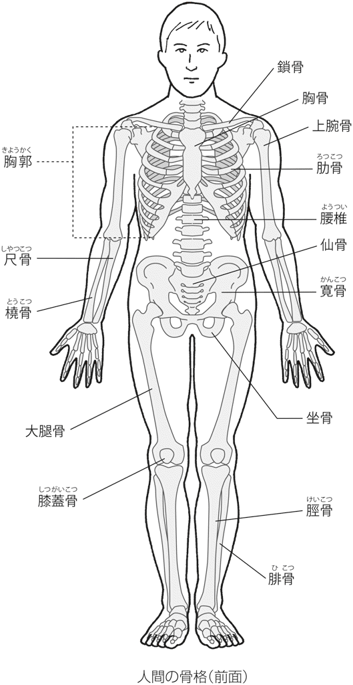
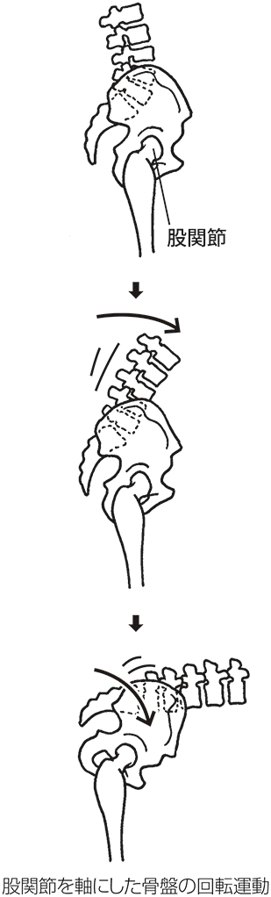
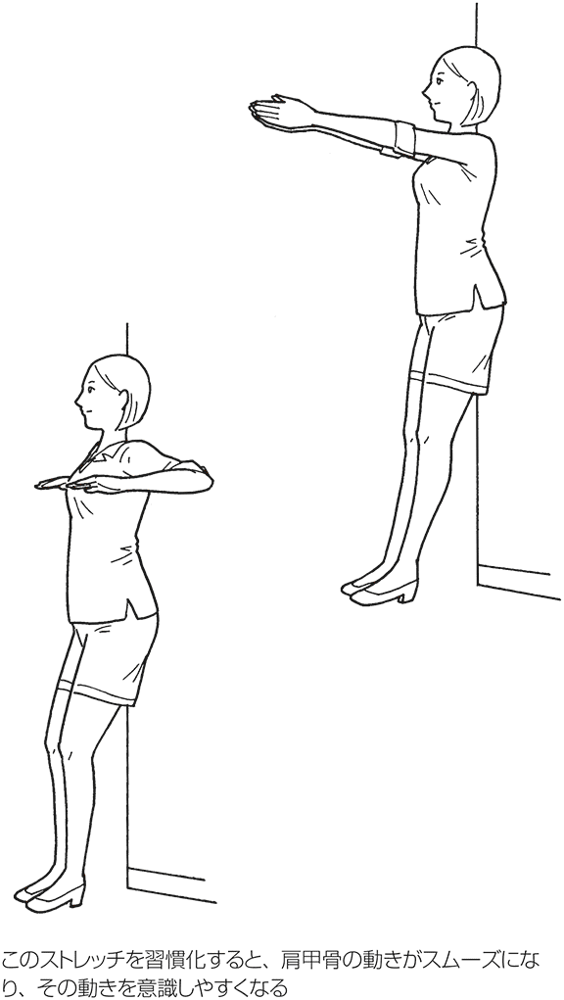
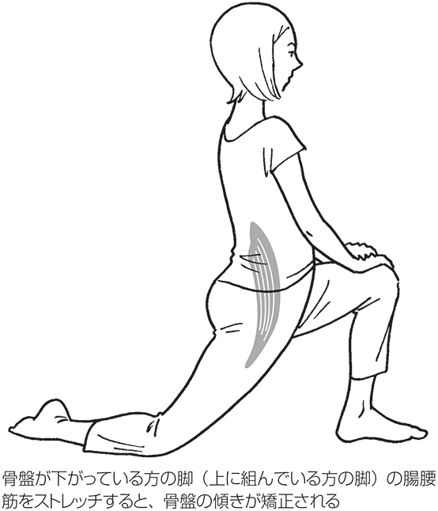
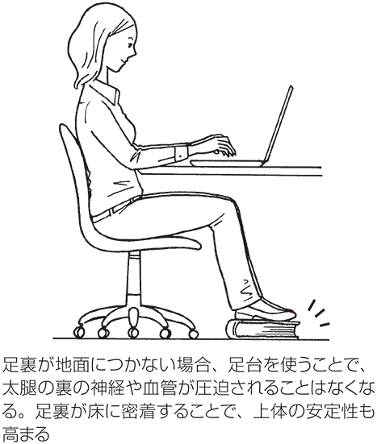
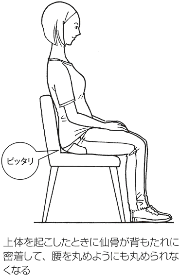

| アゴを引けば身体が変わる～腰痛・肩こり・頭痛が消える大人の体育～ | |
| 伊藤 和磨 | |
| (2013) | |
問題 左の枠内から語句を選んで文章の空欄を埋めなさい。（制限時間３分）
頭痛と肩こりになるのは、座っているときに骨盤が（ ）して、頭が（ ）に垂れた姿勢になることが原因である。この姿勢は、呼吸・循環器系と（ ）系にも影響を及ぼす。椅子の座面と背もたれの角に、尻を（ ）ようにして座り、舌を上（ ）につけて軽くうなずけば、頭を支える筋肉が働いて、頭痛や肩こりを予防・改善することができる。
①前 ②後ろ ③消火器 ④後傾 ⑤寝かせる ⑥差し込む ⑦目 ⑧持ち上げる ⑨アゴ ⑩鼻 ⑪唇 ⑫消化器 ⑬前傾 ⑭手
※答えは「まえがき」の最後で。
まえがき
人の身体は、壊れてもパーツ交換ができない。壊れてしまったら、完全に機能が元に戻ることはない。厄介でも自分の身体と一生つき合っていくしかないのである。だから、壊れてしまう前に、何とかする必要があるのだ。
しかし、あなたは身体を長持ちさせるための姿勢や身体の動かし方を、学校や病院で教わった経験があるだろうか。おそらく「ない」と答える人の方が、圧倒的に多いと思う。
身体の鍛え方や、癒し方を教えてくれる施設はあっても、猫背にならない「座り方」や膝の痛みを回避する「階段の上り方」など、すぐに役立つ日常動作を、理論と実践を交えて教えてくれる施設はめったにない。
人は痛みを自覚すると、それを取り除くことばかり考えるようになるものだが、あくまでも痛みは「結果（現象）」であり「原因（本質）」ではない。根本的な原因は、患部に負担を掛けている姿勢や動作フォームにあるのだ。
現代の医療は「差し引く」という謙虚な考え方が足りない気がする。症状を根本から改善し、再発を防止するには、何かを足す必要も、始める必要もない。患部にストレスを与えている要因を減らすか、止めればよいのである。
しかし、すでに何らかの病を患っている人たちに、予防医学的なアドバイスをしても、関心を示さないことが多い。たとえば、椎間板ヘルニアと診断された人に、それを悪化させない座り方を紹介しても、「自分は椎間板ヘルニアになっているから、今さらやっても遅い」「知りたいのは予防ではなく、改善させる方法だ」とそっぽを向かれてしまうのだ。こういう人たちは、症状の改善を目的とした「治療」と「予防」を別個に考えているのだが、その根っこは同じなのである。
腕のいい歯科医に診てもらっても、歯を磨かなければ虫歯が改善しないように、予防は、病状に関係なく効果があり、自覚症状があってもなくても継続する必要があるのだ。
トレーナーになってから13年になるが、毎日慢性の疼痛患者を診てきて、私はある疑問を抱いている。
それは、国の医療保険が破綻寸前まできているのに、なぜ腰痛や肩こりを患う人の数を減らすための実効的な対策を、政府がいつまで経っても打ち出さないのか、という疑問である。
全ての国民が、義務教育で９年間も保健体育の授業を受けているのに、身体を痛めないで生きていくための知恵やコツを教わっていないのは、おかしな話である。
２０１２年の春、文部科学省は武道とダンスを中学の体育のカリキュラムに導入した。しかし、きちんと座っていられない子供が増え、頭痛や肩こりを訴える人の割合が増え続けている現状を勘案すれば、頸や腰に負担が掛からない椅子の選び方や座り方、パニックに陥らないための息の吐き方なども指導した方がいいのではないだろうか。よいメソッドがたくさんあるのだ。
今日まで学校の保健体育の試験では、走り高跳びのルールやバスケットボールのコートの名称など、健康とは全く関係ないことが多く出題されてきた。それなら、冒頭に掲載したような問題を出題した方が、子供たちの将来のためになるだろう。９年間もあれば、運動が苦手な人でも、腰を痛めないかがみ方や頸を安定させる舌の使い方くらいマスターできる。超高齢化が進むなか、保健体育が担う役割と責任は、これからより大きいものになるだろう。日本は世界一の長寿国を自負してきたが、これからは単に長生きするだけでなく、もっとＱＯＬ（生活の質）を高めることに傾注してもらいたいと思う。そのためには、痛みがない身体を維持する必要があるだろう。
私の仕事は、痛みの病巣を特定し、機能回復させながら痛みを取り去ることだが、どんな試みも上手くいかなかった患者が、たった一言のアドバイスで本質的な原因に気づき、負のスパイラルから抜け出したケースが幾度となくあった。
「もっと、早く知りたかった。もっと早く気づいていれば、こんな身体にならずに済んだのに......」と、無念の表情を浮かべて、後悔を口にする患者を目の当たりにするたびに、似たような境遇にいる人たちの役に立ちたいという思いが強くなっていった。
本書は、そういう思いから始まった。
本書のコンセプトは、姿勢を中心として、呼吸パターン、動作パターン、作業環境の改善を目的としている。全体の構成はオムニバス形式になっているので、どこから読み始めてもよい。アゴを引くことをベースに頭部から足へとテーマが移行していき、椅子の話へと至る。
なぜ椅子をテーマにしたのかと、不思議に思われる方がいるかもしれないが、現代人は一日のうち、半分近い時間を座って過ごすからであり、この座り方で様々な不調を起こすからだ。靴をテーマにした章もあるが、これも同じような理由からである。
最終講義で慢性痛をテーマにしているが、慢性痛の本質を知り、痛みとの向き合い方を工夫することで、痛みの感じ方が大幅に軽減されるのである。
ところどころ、断定的な表現をしているが、13年間のセッションで積み重ねた経験と、複数の研究機関や調査機関のエビデンスを基にしている。
いつの日か、私が切望しているようなカリキュラムが学校教育に導入される日が来るかもしれないが、すでに大人になっている私たちが、小中学校に戻って学ぶことはできない。
保健体育の授業で教われなかった大事なことを、大人の読者に知ってもらいたいと、サブタイトルに「大人の体育」と入れた。紹介しているコンテンツは、体育が苦手だった人でも、すぐに実践できるものだけを選りすぐっているので、ぜひ習慣に取り入れていただきたい。
本書が、ＱＯＬの向上に役立つことを祈願している。
冒頭の問題の答え
頭痛と肩こりになるのは、座っているときに骨盤が（④後傾）して、頭が（①前）に垂れた姿勢になることが原因である。この姿勢は、呼吸・循環器系と（⑫消化器）系にも影響を及ぼす。椅子の座面と背もたれの角に、尻を（⑥差し込む）ようにして座り、舌を上（⑨アゴ）につけて軽くうなずけば、頭を支える筋肉が働いて、頭痛や肩こりを予防・改善することができる。

イラスト 中村知史
講義１ ツワモノはアゴを引く
＊アゴを引く偉人たち
人の印象はどこで決まるだろうか。
たとえば、偉人といわれる歴史的な人物の写真や肖像画を見ると、皆厳しく精悍な表情をしている。その風姿は誇り高く、若くとも近寄りがたいオーラを発している。
坂本龍馬、吉田松陰、勝海舟、吉田茂......激動の時代を生きた偉人たちは、みな凛とした姿勢で真っすぐに正面を見据えている。
このような、昔の日本人が放っていた威厳ある印象は、一体どこからきているのだろうか。
様々な理由が挙げられるだろうが、身体論的な観点から分析すると、一つの答えが見えてくる。写真や自画像を見る限り、歴史に名を残した人物は、しっかりとアゴを引いているという特徴を持っているのである。
アゴを引くから偉人なのか、それとも偉人だからアゴを引いているのかはわからないが、とにかくアゴの上がった偉人の姿を見たことがない。
１６１３（慶長18）年に、仙台藩主の伊達政宗が慶長遣欧使節をスペインとバチカンに派遣した。そのときの様子が描かれている壁画には、支倉常長のアゴを引いた威風堂々とした姿がある。
小さいのに毅然とした態度でいる日本人に対して、欧州の人々はどのような印象を持っただろうか。
１９４５年、東京湾に停泊した戦艦ミズーリの甲板にて大勢の海兵隊が見守る中、降伏文書に署名する重光葵と梅津美治郎の姿をテレビで見たとき、同じ日本人として心に響くものがあった。ここでも重光と梅津はアゴを引いて毅然としていたのである。調印のテーブルを囲む海兵隊員たちが、敗戦国の代表者である重光と梅津を、畏敬の眼差しで迎えているのが伝わってきた。
それから半世紀以上経ち、世界第２位の経済大国にまで成長したにもかかわらず（現在は中国に抜かれて３位）、サミットなどで外国の首脳たちと日本の首脳が並ぶ様子を見ると、あまりの体格差と風格の違いに恥ずかしくなるときがある。
背の低さや胴長短足といった、体格差の問題だけでは片づけられない。中国や韓国の首脳たちも背が高いわけではないのに、頭一つ分以上大きな欧米人と堂々と渡り合っているからだ。国民性の違いもあるだろうが、ここでも姿勢のよし悪しが威厳に大きく影響している。
本当ならば、今の日本人は経済も背丈も大きく成長したのだから、昔より堂々としていてもいいはずなのに、その反対に自信をなくして委縮してしまっているように感じられる。
厚生労働省の国民健康・栄養調査によれば、１９５０年の30代男性の平均身長は１６０・３センチ、30代女性の平均身長は１４８・９センチ。そして、２００７年の30代男性の平均身長は１７１・４センチ、30代女性の平均身長は１５８・０センチとなっている。日本人は、男女ともに約60年間で平均身長が10センチも伸びていることになる。外見だけ見れば、ずいぶんと西洋人の骨格に近づいているのだ。
今よりも身長が低かった昔の日本人の方が、大きな外国人に対してアゴを引いて胸を張り、プライドを見せていたのではないだろうか。小さな身体で大きな外国人と張り合っている香川真司選手や長友佑都選手の姿は、昔の気概があった日本人を彷彿とさせるものがある。
昔の人間の心身が全てよかったというわけではないが、先人たちから学ぶことは多い。草食系という言葉が定着してしまったが、日本人の威厳や誇りを取り戻すために、まずは形から正してみるのもよいのではないか。とすれば、まずはアゴを引いてみることから始めてみよう。これだけでも背筋が伸びて凛とした姿勢になれるのである。
＊アゴで身体の歪みがわかる
「写真を見ると、いつも顔が傾いている」と、感じている人は多いだろう。
頭痛や頸の痛みを患っている人は、アゴの先端と頸の中心がズレている可能性が高い。
めまいやふらつきなど、頸から上の不調を抱えている人の多くは、横から見るとアゴが上がっていて、正面から見ると鼻と頸を結んだ線が垂直線上にないのである。つまり、頸の上に頭がきちんと載っていないのだ。
こうした状態が長く続くと、頭部の動きを微調整する後頭下筋群や胸鎖乳突筋が凝って、めまいや頭痛、焦点のズレによる眼精疲労、思考力の鈍化など、実に様々な不調の原因となる。また、この部分の凝りが原因で、自律神経失調症に酷似した症状が生じる場合もあるのだ。
これを治すには、単にアゴの位置だけを矯正すればよいというわけではない。
アゴ（頭部）の傾きは、左右の脚の長さの差や、アンバランスな左右の脇腹の筋肉によって生じているからだ。
骨盤や脊柱に傾きがある場合は、視界を水平に保つために、無意識に頭部（顔）が傾く。身体の歪みを頸の関節と筋肉が補正しているわけである。これを根本的に解決するには、骨盤と左右の肩（鎖骨の先端）を水平に保つようにしなくてはならない。
読者諸氏は鏡の前に立って、次の３カ所をチェックしてほしい。
①鎖骨の中心にある窪み
②アゴの突端
③頸の中心軸
もし、アゴと頸の中心と鎖骨の中心の窪みとが垂直線上になければ、それは頭の重さを正しく支えられないということである。そのような歪みがある状態が続けば、頸から肩にかけて凝りが生じるだけでなく、頸椎の椎間板や関節の変形を早めることになり、問題が深刻になっていく。
鏡でチェックしながら３点を一直線にしたときに違和感があれば、身体か脳のどちらかが歪んでいる可能性が高い。そして、その状態が「常態」となってしまっているのである。
＊知られざる下アゴの機能
下アゴは約１キロの重さがあるが、それを側頭部の筋肉で吊り下げている。
噛み合わせが悪かったり、けがによって下アゴの位置がズレていたりすると、顎関節や第一頸椎（「頸の凝りと頭痛の関係」の図参照）に非対称のストレスを与え、それが全身的な不調をきたす要因にもなるのである。
これは、下アゴに膝蹴りを食らって３カ所骨折し、今もプレートが入っている自分の実体験からもいえることである。
下アゴには重力の変化を感知する役割がある。身体のブレをいち早く感知して、バランスを修正するのに必要な情報を脳に提供し、姿勢の制御に関わっているのである。
下アゴの前歯も、姿勢のバランスに関与している。実際に、下アゴの歯が抜けてしまうと、頭部の位置を制御することが困難になるのだ。
このように、下アゴは「知られざる重心のバランサー」として、私たちの姿勢を支えているのである。
＊アゴはやる気のスイッチ
人の身体には、「スイッチ」があることをご存じだろうか。
そのスイッチとはアゴのことである。アゴを引けばスイッチが「ＯＮ」になり、アゴを出せばスイッチが「ＯＦＦ」になる。
スイッチを「ＯＮ」にすると姿勢が整う。姿勢が整うということは、脊柱を整えることであり、脊髄の機能を整えることである。脊髄の働きが向上すれば、神経骨格筋系、呼吸循環器系、消化器系、泌尿器系、生殖器系など、全身の機能が高まるのである。
アゴを引くと、重い頭が胴体の真上に位置して、脊柱が最も安定した形（ニュートラルポジション）になり、上半身の重さを「骨」で支えられるようになる。だから、頸や腰への負担が大幅に軽減され、肩こりや腰痛症の予防・改善になるのだ。また、頭が正しい位置にあるときは、全身の運動効率が高まるため、最小の力で最大の力を発揮できるようになるのである。
近年、呼吸の大切さが再認識されるようになったが、質のよい呼吸をするためには、息を鼻から吸うことが必須条件となる。鼻呼吸は鼻の粘膜を刺激するため、脳が活性化する。アゴを引いて、舌を上アゴの歯の裏側につければ、自然と鼻呼吸が促されるのだ。
一方、アゴを出してスイッチを「ＯＦＦ」にすると、骨盤が後ろに傾いて猫背になり、脊柱が不安定な状態になって、上半身の重さを「筋肉」と「靭帯」で支えることになる。骨とは違い、筋肉や靭帯は持続的な負荷に弱いため、徐々にダメージが蓄積されていき、いずれ痛みや機能障害が起きる。そして、脊柱が歪むと脊髄も歪むため、全身の機能が低下するのである。
さらに、アゴが出ると、口が半開きになって鼻から息を吸えなくなってしまい、代わりに肩と頸の筋肉を使って呼吸をするようになる。これが慢性的な肩こりの原因となるのである。
ほとんどの人が肩こりや腰痛症を経験するのは、アゴが出たＯＦＦの状態で暮らしているためである。
アゴの「スイッチ機能」を試してみたい人は、アゴを上げた状態とアゴを引いた状態で、壁を押してみてほしい。力の伝わり方に格段の差があることに気づくだろう。ゴルフをやる人であれば、アゴが上がった状態でスウィングする場合と、アゴを引いてスウィングする場合では、上体の安定性と回転速度が大きく違うことを実感できるはずだ。
マラソンの中継で「○○選手、アゴが上がってきて苦しそうですねぇ」という解説を耳にすることがある。アゴが上がると骨盤が後傾して、脊柱のＳ字を保てなくなり、推進力が大きく低下するのである。体力にある程度の余裕がないと、激しいパフォーマンス中にアゴを引き続けられなくなる。アゴを引く大切さをわかっていながらも、息が続かなくなると、アゴが上がって頭が前に出てしまう。こうなると、重心が後方に移るので推進力が落ちてしまう。試しにアゴを上げて歩いてみると、歩行速度が著しく遅くなるのがわかるはずだ。
運動が不得意な人たちの動作フォームを観察すると、アゴが上がりやすく、ニュートラルポジションとかけ離れた姿勢になっている。
状況や体調に合わせて、意識的にアゴを引いたり出したりして、スイッチのＯＮ、ＯＦＦを切り換えるのもよいのではないだろうか。
＊生体力学から見る殿様座り
戦国ドラマに出てくる殿様は、必ずといってよいほど大きく脚を開き、背筋をしゃんと伸ばして座っている。背中を丸めて頭が垂れた殿様は出てこない。私はその姿勢を「殿様座り」と呼んでいるが、脚を開くことによって、安定して座れるようになるのだ。
試しに脚を40度に開いて座り、うなずくようにアゴを引いてもらいたい。すると、足の裏が地面に密着し、腰が入った状態になるのを実感するはずだ。反対に足を閉じて座ると、アゴを引いても腰が丸まってしまい、猫背になるのがわかるだろう。
開脚して座っていれば、体重を地面に転嫁できるだけでなく、アゴで姿勢をコントロールできるのである。
先人たちは健康増進のために、開脚していたわけではないだろうが、彼らが感覚的に実践していた殿様座りは、バイオメカニクス（生体力学）の観点からも非常に優れていたのだ。
＊頭が前に出ることのリスク――ヘッドフォワードポスチャー（ＨＦＰ）
慢性の肩こりや腰痛を抱えた患者を対象に、今日まで数多くのセッションを実施してきたが、全ての患者に共通していたことがある。それは、どの患者も頭が胴体の上に載っていなかったことだ。頭半分くらいが前に突き出た姿勢になっている人もいた。最近では、子供も同じような姿勢になっている。
繰り返しになるが、アゴが上がって頭が前に出ると、全身の運動効率が著しく低下する。
試しに頭を前に垂らした状態で、両手で万歳をしたり、片脚ずつ膝を高く引き上げたりしてみてほしい。頭を胴体の上に位置させたときと比べると、手足の上がる範囲が狭まっていることを実感できるはずだ（「痛みがあるときの賢い動かし方」の図参照）。
このような頭が前に滑り出た姿勢を「ヘッドフォワードポスチャー（以下ＨＦＰ）」と呼ぶ。ＨＦＰになると、次の三つの問題が生じる。
①慢性的な頸から肩にかけての凝りと偏頭痛
②呼吸パターンの悪化
③心身症の引き金（講義４で詳しく説明）
①と②の問題について具体的に説明しよう。
①慢性的な頸から肩にかけての凝りと頭痛
正しい位置から頭部が２・５センチ前に出るごとに、頭から頸、肩にかけての筋群に掛かる負荷は４キロずつ増加すると指摘されている。デスクワーカーでは平均５～６センチほど前に出ている人が多く、プログラマー（ＳＥ）に至っては、６～９センチも前に出ている人が少なくない。近年では、子供でも６～８センチくらい前に出ている場合がざらにある。
仮に、体重70キロの人の頭が10センチ前に出ていたら、頭の重さも足すと、合計で21～25キロもの負荷が、頸の筋肉と靭帯に掛かることになる。デスクワーカーの平均労働時間を１日６～８時間とすれば、21～25リットルの水の入ったバケツを、毎日６～８時間も頸からぶら下げて仕事をしていることになる。
試しに、後頭部と背中を垂直線上に位置させたときと、ＨＦＰにしたときに、指で頸の筋肉を揉んでみれば、その硬さの違いがすぐにわかるはずだ。
また、キーボードやマウスを操作しているときに、知らないうちに肩がすぼまっている人がいるが、３～４キロ近くある腕の重さを、肩の筋肉だけで毎日数時間も持ち上げ続けたら、肩が凝らないわけがない。パソコン作業に従事する人は、常にこのような状況下にあるのだ。
ＨＦＰになると、脳底に血液を送る椎骨動脈が引っ張られて、血管が狭まるため、脳に十分な血液と酸素を供給できなくなり、脳貧血を起こす可能性が高くなる。
講義７で詳述するが、ほとんどの企業で使われている机の高さは、従業員の身長にフィットしておらず、窮屈な格好で作業せざるを得ない状況にある。
こういう環境は、肩こりのみならず、腰痛症をも引き起こす。肩こりと腰痛を別個に分けて考える人もいるが、これらの問題は常に同時に起きているのだ。
もう一つ、偏頭痛もＨＦＰが主な原因となっている場合がある。頸と肩の筋肉が硬くなって起こる頭痛を「頸性頭痛」と呼ぶ。頭痛の多くは、この頸性頭痛が原因となっている。
ＨＦＰは、舌と下アゴを引き下げる筋肉を過度に緊張・硬化させるので、下アゴが前に引っ張られて口が少し空いた状態になる。この状態が慢性化すると、顎関節の変形や側頭部に広がる頭痛を患うリスクが高くなる。
頭痛や頸の痛み、腰痛を根治したいと望むのであれば、意識的にアゴを引いて、頭を胴体の真上に位置させる時間を増やすことが大切だ。
意識だけで頭を正しい位置に維持するのは非現実的なので、仕事中や勉強中はアゴを引いてから頬杖をつき、手で頭の重さを支えてやることをお勧めする。
②呼吸パターンの悪化
呼吸は姿勢の影響を受けるため、姿勢を改善しないことには、呼吸の質を改善することはできない。先述したようにＨＦＰになると、舌骨筋群が緊張して下アゴが下がるので口が開きやすくなる。
舌が下がって口が半開きになると、鼻呼吸ができなくなってしまう。口を開けた状態で鼻呼吸をしてみると、息が吸い難いことがわかる。そうなると口呼吸をせざるを得なくなる。しかし、口呼吸では一回に吸える酸素の量が少ないので、呼吸の回数が増加して交感神経（「交感神経と副交感神経の働き」参照）が活性化する。すると結果的に、不安や緊張、怒りといったマイナスの感情が増長されるのである。
また、鼻呼吸のときに主に使う筋肉（横隔膜）が活動せず、代わりに頸や肩の筋肉を使って息を吸おうとするので、慢性的な肩こりの原因となる。実際、慢性の肩こりの人たちは、例外なくＨＦＰで口呼吸になっている。
鼻から息を吸って、粘膜を介して酸素を取り込む鼻呼吸の方が、頭＝脳の働きがよくなる。
一方、口呼吸は頭の働きを低下させることになる。鼻詰まりのとき、眉間のあたりがボーっとしてやる気がなくなる、あの感覚を思い起こしてもらいたい。同じ酸素を吸っているのに、鼻が詰まると何をするのも億劫になってしまうものだ。
鼻の粘膜から得た情報や刺激は、記憶を司る海馬に直接届くため、過去の記憶が瞬時に蘇ったり、性的な興奮を覚えたりすることもわかっている。
口呼吸は運動器の機能にも悪影響を及ぼす。口から息を吸うと声門が開くため、腹腔の内圧が低下して腰椎が不安定になる。たとえば、口を開けたままでは肛門を締めるのが難しく、口を閉じることで肛門も締めやすくなるのだ。
稀にトップクラスのアスリートで、口呼吸になっている人もいる。彼らにニュートラルな姿勢をとらせるのと同時に、舌を上アゴにつけて鼻呼吸をするように指導すると、さらにパフォーマンスが向上する。口呼吸では体幹が安定しないだけでなく、吸気量が低下するため、身体的な限界値が低くなるのである。
＊手軽にＨＦＰを改善するには
諸悪の根源ともいえるＨＦＰだが、手軽に改善する方法がある。それは舌を上アゴにつけておくことである。
読者諸氏に試していただきたいのだが、まず舌を少し下げてみてほしい。すると、少し口が開いて、容易に頭を前に出せる状態になっているのがわかるはずだ。
次に、舌を上アゴにつけてみてほしい。このとき、歯を食いしばらずに、舌一枚分の隙間を開けておく。こうすると自然に口が閉じて、頭を前に出せなくなるのが実感できるはずだ。舌を上アゴにつけるだけで、重さで下がりやすい下アゴが水平になり、頭部を支える頸椎の前面にある小さな筋群が働いて、頭部と頸椎の動揺を防いでくれるのである。
最後に、舌が下がると瞼が下がって目力がなくなってしまうのだが、舌を上アゴにつけて口を閉じると目尻が上がって、目力が強くなる。
さあ、今日もアゴを引いてスイッチをＯＮにしよう。
講義１のまとめ
①アゴを引くと相手に与える印象が変わる
②アゴを引くと骨盤が前傾して、姿勢を正すことができる
③アゴを引くとめまい、ふらつき、頭痛、頸の痛みが改善される
④舌を上アゴにつけると頸や腰への負担が軽減される
⑤舌を上アゴにつけると鼻から息が吸いやすくなる
講義２ 腰痛を治す尻の使い方
＊前のめり姿勢は万病の元
腰痛の人は全国に推定２８００万人いることが、厚生労働省研究班の調査によってわかった。40～60代の約４割が腰痛症に悩んでいるそうだ。
人は気を抜くとすぐに背中が丸まり、身体全体が前傾していく。３人に１人が経験するといわれている腰痛症は、この猫背や前のめりの姿勢が原因で起きている。
上体が一度でも前に傾くと、身体の背面の筋肉が緊張し始め、前傾する角度と時間が増すほど、腰に掛かるストレスも増大していくからである。反対に、一度でも後ろに上体が傾くと、身体の背面に掛かるストレスがなくなり、腰の筋肉が弛緩するのだ。
しかし、多くの人は疲労するほど、背中を丸めた姿勢で休もうとする。これでは休んでいるのではなく、反対に腰を痛めつけることになってしまう。腰の痛みを訴える人は大勢いるのに、胸筋や腹筋の痛みを訴える人がいないのは、ほぼ全ての人々が、前のめりや猫背で暮らしているからなのである。もし、荒川静香さんのイナバウアーのように上体を反らした姿勢で過ごしていたら、腰痛が減って腹筋痛を訴える人が急増するだろう。
猫背や前かがみの姿勢が、どれだけ腰に負担を強いるのかを理解してもらうために、腰の筋肉に手をあてたまま、前にかがんでみてほしい。深くかがむほど、筋肉が硬くなるのがわかるだろう。
多くのデスクワーカーは、30度くらい前傾した姿勢で座っている。これは決して姿勢が悪い方ではないのだが、30度前傾しただけでも、脊柱起立筋（背中の筋肉）の血流量が８分の１まで低下するのだ。
筋肉の血流量が低下すると乳酸が蓄積して、筋肉が酸欠状態になり、炎症を起こす物質が生産されて痛みが生じることになる。このような、血流不全によって起こる痛みを、「虚血性疼痛」と呼ぶ。慢性痛のほとんどが、この虚血性疼痛によって起きているといっても過言ではないのである。
また、関節を固定する靭帯には、痛みの刺激を感じ取るセンサーがたくさん含まれているので、持続的に伸ばされると強い痛みが生じる。そして、その痛みが周辺の筋肉や、遠く離れた部位にも広がるのである。実際に、腰椎に付着する靭帯が侵されると、脚に痛みが広がることが判明している。
前かがみや猫背だと、脊柱管狭窄症や椎間板ヘルニアを患うリスクが高まる。まさに悪いことづくしなのである。
逆に、上体を反らすと腰の筋肉が弛緩して柔らかくなり、血流の回復によって乳酸や痛みを出す物質が除去される。同時に、筋肉の内圧が減少するので、筋膜と血管壁への刺激が減り、動きと痛みが同時に改善されるのである。
このように、ときどき上体を起こして腰を反らす習慣（理想は20分に１分のペース）を身につければ、虚血性疼痛をはじめ、靭帯の引き延ばしや椎間板ヘルニアなど、腰痛を発症させる要因を減らすことができるのである。
すでに猫背の癖があって、腰の筋肉が固まっている人は、腰を反らしたときに痛みを感じる場合がある。しかし、継続していれば徐々に痛みが和らぐので、ぜひ続けていただきたい。
多くの人が朝起きてから寝るまでかがんだ状態で過ごしていることを鑑みれば、腰痛症が増加し続ける理由がわかるだろう。そして、どうすれば解決できるのかも、自ずと見えてくるはずだ。
＊お尻の威力
もし、私たち人間が猫背と前のめり姿勢を止められたら、頸や腰の痛みを患う人の数は、10分の１以下に減るかもしれない。
実は、私たちのお尻（大殿筋）には、猫背や前のめりになることを抑制してくれる、大切な機能が備わっている。さっそく、そのお尻の使い方を紹介しよう。
やり方はシンプルで、お尻の割れ目を締めるように力を入れるだけで、骨盤が固定されて前のめりや猫背の姿勢を防止・改善できるのである。この抑制力は非常に強く、お尻を締めたままでは深くお辞儀できないほどだ。
試しに、お尻を意識せずにお辞儀をした場合と、お尻に力を入れたままお辞儀をした場合とを比較してもらいたい。お尻を締めないと、簡単に上体をかがめられるが、お尻に力を入れたままだと、ほとんどかがめなくなることが実感できるだろう。
お尻に力を入れて立つ習慣を身につければ、特にスクワットをやらなくても、生涯、猫背にはならないと約束してもいい。お尻が人の直立二足歩行を支えているだけでなく、優れた猫背予防装置としても活躍しているのである。
お尻の形と張りと腰痛には関連性がある。慢性腰痛を患っている人や、シニアで猫背（前のめり）になっている人を真横から観察すると、大殿筋が萎縮し、お尻がぺたっとして小さくなっている。もしくは、左右のお尻のサイズが大きく異なっているのだ。お尻に力を入れるように示指しても、全く力が入らないか、入ったとしてもわずかである。
しかし、何歳になってもお尻を締めて立つように心掛けていると、大殿筋の厚みが増して前のめりと猫背の姿勢が改善されるのだ。
お尻を締めると、下腹がへこんでヒップアップできるのも嬉しいオマケである。
＊人はかがんで腰痛になる
皆さんは、「しゃがむ」と「かがむ」の違いをご存じだろうか。また、これらの動作を使い分けているだろうか。
『明鏡国語辞典』によると、しゃがむは「ひざを曲げ、腰を落として低い姿勢になる」、かがむは「腰やひざを折って、低まった姿勢になる。前かがみになる」とある。
英語では「かがむ」は「bend」で、「しゃがむ」は「squat」という。この二つの動作の違いを理解して、状況に応じて使い分けられるか否かで、腰痛の予後が大きく変わってくるのだ。なぜなら、人は生涯で数万回かがむといわれているが、かがむ動作が最も腰に負担を掛けるからである。
しゃがむ動作は、膝と股関節を同時に深く曲げていき、最後は蹲踞の格好になる。一方、かがむ動作は、最初に少し曲げた膝の角度を変えずに、上体を前に倒していきながら、最後は深くお辞儀をした格好になる。
両方とも、動作中に腰を反らした状態を保つことが大切である。重い物を持ち上げる場合は、引っ越しスタッフのように、しゃがんで持ち上げる方が安全であり、中腰で作業する場合は、かがんだ方が腰への負担が少なくて済む。
二つの動作を正しく行えなければ、筋トレで腰回りの筋肉を鍛えたとしても、腰を痛めてしまうのだ。間違っても、腹筋や背筋を鍛えれば腰痛が治るなどという、根拠のない話にのせられないようにお願いしたい。筋力が増したからといって、それが腰痛防止に直結しているわけではないのである。
＊かがむお手本はアフリカの女性
私は行ったことのない国を旅することが好きで、これまで40カ国以上を訪れてきた。景色を楽しみながらも、現地の人々の姿勢やかがむフォームを観察している。そこで気づいたのは、日本人と比べて、かがむのが上手い人が多いということである。少々専門的にいえば、股関節を軸にした骨盤の回転運動（腰椎―骨盤リズムという）ができているのである。

特に、アフリカの人々の日常の姿勢と動作フォームは、全てがお手本といえるくらい美しく、バイオメカニクス的な観点からも理に適っているのだ。壷を頭に載せて歩く彼女たちの姿勢は、最も効率のよい「ニュートラルポジション」になっていて、「骨」で立っているのである（「アゴはやる気のスイッチ」の図を参照）。そして、かがむときも、ニュートラルポジションを崩していない。おそらく、先天的に太腿の裏側の柔軟性が高いことが、あのフォームを可能にしているのだろう。
＊日本人がかがむのが下手なワケ
日本人は、基本的に出っ尻でしゃがんだりかがんだりしない。出っ尻になったとしても、腰が丸まっている。これは、正座や胡座をかく習慣が長かったことと、人前で尻を突き出すという行為を「はしたない」と思う感性が影響していると思われる。
故に、日本人のかがみ方は腰が丸まっていて、非常に運動効率が悪く、腰痛になりやすいフォームになっているのだ。
腰を丸めたまま、しゃがんだりかがんだりしていると、膝を痛めるリスクも高まる。膝を深く曲げた状態で大きな負荷がかかると、膝の半月板に大きなストレスがかかり、膝関節を痛めてしまうからである。年齢に関係なく、しゃがむときはつま先よりも膝が前に出ないように注意しなければならない。
最近では、80歳を過ぎても背筋が伸びているシニアが増えたが、昔は腰を折り曲げて歩くシニアがたくさんいた。特に、農業に携わる女性たちが円背姿勢になる傾向があったようだ。一般の家庭に家電製品が普及していない時代は、腰を丸めながら家事をする時間が今よりも圧倒的に長かった。これが円背になる原因の一つになったと考えられる。もし、正しいかがみ方を教育されていたら、昔の人たちも円背にならずに、もっと楽に老後を過ごせたはずである。
＊ヒップヒンジの効能
理想のしゃがみ方とかがみ方は、反り腰をキープして出っ尻にすることである。この尻を突き出す動作を「ヒップヒンジ」という。ヒップヒンジでかがめば、椎間板への圧縮力と関節に加わる負荷を最小限に抑えられるのだ。また、上体が前に倒れようとする力を、強靭な尻と太腿の筋肉に分散することができるので、腰を痛める可能性がぐっと低くなる。
重量挙げの選手たちのフォームも必ずヒップヒンジしていて、バーベルを持ち上げている最中も絶対に腰を丸めることはないのだ。
腰痛症の権威であるマックナブ氏の著書『腰痛』には、アフリカの人々に腰痛症を訴える人はほとんどいないと書いてある。もし、それが事実だとすれば、理想的な姿勢で歩き、正しくかがんでいることが奏功しているのかもしれない。
医療体制が整っていない途上国の方が、医療体制が整っている先進国よりも、腰痛患者の数が少ないというのは皮肉な話だが、彼らの姿勢と日常動作をお手本にすれば、先進国の人々も腰痛から解放される確率が高くなるだろう。
＊理想のかがみ方
では、さっそく「ヒップヒンジ」を使ったかがみ方を、効率よく会得する方法を紹介しよう。
ヒップヒンジは大殿筋のパワーを最大限に活かせるので、スポーツに携わる全ての人々にマスターしてもらいたいフォームである。スポーツをしない人でも、腰痛予防と改善に役立つので、是非ともヒップヒンジを活用していただきたい。
このスキルを会得するために、「鼠径部」がどこにあるのかを知る必要がある。鼠径部の場所は、ビートたけしの往年のギャグ「コマネチ」を想い出してもらいたい。あれは両手を両足のつけ根でＶ字を描くように動かすものだが、このＶゾーンが鼠径部である。鼠径部に両手の指４本をあてて、後方に押し込んでいくと、自然と鼠径部が畳まれて上体が前傾して、ヒップヒンジになるのだ。
上体を深く前傾させていくときに、思い切って胸を前に倒して「お辞儀」をするのがコツである。また、動作の途中で膝の角度は変えない。鏡の前に横向きで立ち、かがんでいる最中に緩やかな腰の反りが保たれているか、チェックするとよい。
正しくかがめていれば、深くかがんだときに、尻と太腿の裏側に強い張りが感じられるが、間違ったかがみ方をすれば、腰に強いストレスを感じる。
かがむ前に鼻から息を吸い、動作中は息を止めて、上体が完全に起き上がったら息を吐く。この動作をゆっくりと10回繰り返して２セット行う。
動作の前に舌を上アゴにつけて、息を鼻から吸いながらヘソの下を少しへこませておくと、腹圧が維持されてギックリ腰の予防になる。
上手くできない人は、柱や椅子の背もたれに両手をついた状態で練習すれば、ヒップヒンジの感覚をつかみやすくなる。
この動作を12～16回繰り返していると、尻の筋肉が硬い人も次第に動きがスムーズになってくるので、継続していただきたい。
＊正しいしゃがみ方
ヒップヒンジを覚えたら、正しいしゃがみ方をマスターしよう。
しゃがむ動作は、膝を深く曲げて、腰を反らしたまましゃがんでいくことがコツである。
「昔の日本人は和式便所でしゃがんでいたから、足腰を鍛えられてよかった」という人もいるが、正しい排便フォームができていた人は少ないはずだ。先述したように、しゃがみ方の手本は、相撲の蹲踞である。
運動前に膝の屈伸運動をする人が多いようだが、あれも蹲踞の姿勢で行わないと何の意味もなくなってしまう。
試しに、その場にしゃがんでみていただきたい。膝がつま先よりも前に出ていたり、腰が丸まっていたりしたら、それは間違ったしゃがみ方なのである。
ちなみに、スタンスを広くしてしゃがむと、大腿の内側に負荷が分散し、狭くすると太腿の裏側に負荷が分散する。初心者はスタンスを広めにとった方がよい。上体をあまり前傾させないことも、腰に掛かるストレスを軽減させるポイントである。
しゃがみ方のバリエーションとして、片脚を後ろに引いてしゃがむフォームがある。この動きは、片膝をついて襖を開け閉めするときの所作に似ている。腰に負担が掛からないしゃがみ方なので、ギックリ腰の最中でも安全に行える動作パターンである。
＊身体の中心軸のズレが腰痛を起こす
あなたの上半身は下半身の上に、正しく載っているだろうか？ また、身体の中心軸はズレていないだろうか？
妙な質問だと思われるかもしれないが、身体の中心軸が揃っている人はめったにおらず、大抵の人は、上半身に対して下半身が左右どちらかにスライドしているのである。
慢性的な腰痛を抱えている人の背骨を、指で頸から仙骨までなぞると、背骨が真っすぐになっていないケースが多い。特に、ギックリ腰を起こした直後の姿勢が顕著である。滑稽なほど骨盤が片側にスライドしていて、身体の中心がズレているのである。
しかし、本人にはズレている自覚がない。多くの場合、ギックリ腰になったから骨盤の位置がズレたのではなく、普段から片脚に荷重して休む癖があったり、座っているときにも上体がスライドしたりしているのである。アンバランスな姿勢によるストレスが腰に溜まり、ある日のある行動がきっかけとなって、ギックリ腰を発症するのだ。
読者諸氏も例外ではない。いつも同じ脚を組んで座ってはいないだろうか。または、片側の肘掛けに肘をついて休む癖はないだろうか。床に横座りするときに、決まった方に脚を崩してはいないだろうか。よくわからない人は、すぐにチェックしていただきたい。しっくりくる側と、しっくりこない側があるはずである。この左右差は、上半身と下半身がズレていることを表しているのである。
オフィスで、デスクワーカーの作業姿勢をチェックすると、各々が個性的な座り方をしている。オフィスでは机とパソコンが目隠しになって、ひどい姿勢でも目立たないが、背後から椅子を後ろに引いてみると、本人もひどい格好で机に座っていることに気づく。
ほとんどの人が、上半身と下半身が別々の方を向いて座っている。けれども、作業姿勢の偏りを自覚しておらず、何年、何十年とその姿勢を入れ替えたことがないのだ。
このような歪んだ姿勢で座り続けていれば、「もしかしたら腰痛になるかも」という話ではなく、「いつ腰痛になるか」という話になってくる。
＊身体のズレの方向を確認する「かかしテスト」
それでは身体の中心軸が、どちらにズレているかを簡単にテストする方法を紹介する。
まず、壁の前に踵―尻―背中をつけて立ち、両手を水平に広げる。両手を水平に保ったまま、骨盤を左右に最大限にスライドさせていき、動きの幅を比較する。より大きくスライドした側が軸足（普段から荷重して立つ脚）で、動きの幅が小さかった方が利き足である。第三者に正面から観察してもらうと、骨盤の動きの幅が大きく異なることが一目瞭然でわかるはずだ。
左右の肩から腰骨まで対角線を引いて比べると、ほとんどの人が左右の長さが異なっている。これは腹斜筋という、脇腹の筋肉の長さと硬さの違いから起こっている。実は、この腹斜筋の長さの違いこそが、上半身と下半身の中心軸のズレの原因となっているのである。
テスト中は、壁から膝裏と尻が離れないように注意していただきたい。壁から離れてしまうと、骨盤の正確な並進運動が妨げられてしまうからである。また、頭を傾けたり、両腕を傾けたりすることもＮＧである。
骨盤が軸足側にスライドしやすいのは、骨盤の外側にある筋肉（中殿筋）と、股関節から膝関節をつなぐ靭帯（腸脛靭帯）が伸びて緩んでしまっているからである（筋肉図を参照）。尻の外側から膝にかけての柔軟性の違いは、歩行やジャンプ、ゴルフや野球のスウィングフォームにおける、下半身の安定性に悪影響を及ぼすので、左右差をなくしておくことが大切だ。
かかしテストの代わりに、椅子に座って両手を開き、上体を左右にゆっくりとスライドさせて、動きの幅を比較する方法もある。より上体がスライドしやすい方の骨盤が下がっていて、着座中の身体の傾きの原因になっているのである。
＊スライド姿勢の矯正ストレッチ――「かかしストレッチ」
さて、かかしテストで身体のズレを把握したら、今度は歪みを矯正するストレッチ――「かかしストレッチ」の実践に移る。
壁の前にかかしテストと同じ要領で立ち、骨盤が動き難かった方に、膝裏と骨盤が離れないように注意しながら、ゆっくりと最大限スライドさせていく。このとき、反対側の手を水平に保ちながら、より遠くへ伸ばすようにすると、腹部の筋肉（腹斜筋）のストレッチ効果を高められる。動作中は頭を傾けないこと。次図にあるように、肩と腰骨を結んだ対角線を伸ばすイメージで行うとよい。
ストレッチ中は、30センチ先のロウソクの火を揺らすように、細く長く息を吐き続ける。１日２回（起床一時間後と夕方）30秒間行う。
歪みを矯正するには、日頃、荷重して休む脚を反対にすることや、カバンを掛ける肩をこまめに替えることも重要である。定期的にかかしテストを行い、骨盤のスライドする幅が左右等しくなるまで矯正ストレッチを継続すれば、ギックリ腰も慢性の腰痛も、確実に改善されていくだろう。
講義２のまとめ
①定期的に腰を反らす習慣を身につければ、腰痛を予防できる
②お尻を締めると、猫背や前のめり姿勢を抑制できる
③お尻を締めると、下腹がへこんでヒップアップする
④しゃがむ動作とかがむ動作を使い分ければ、腰痛予防・改善につながる
⑤かかしストレッチで身体の中心軸を整えれば、ギックリ腰にならない
講義３ 豊かな呼吸と貧しい呼吸
＊呼吸で人は変わる
世の中には、実に多くの健康法が存在する。
科学的根拠に基づいたメソッドもあれば、個人の主観だけに基づいたものもあるが、「呼吸の質」を高めることを目的とした健康法は、最も実践しやすくて効果的だと思う。
呼吸の重要性は古くから語られてきたが、最近では身体面よりも精神面での働きが注目されている。呼吸で身体の機能が改善するのはもちろんのこと、性格や思考まで変化することがあるからだ。
サッカー日本代表の長谷部誠選手の著書『心を整える。』が話題になったが、心を整えるということはすなわち、呼吸を整えることでもある。
どんな競技のアスリートでも、走り込みを重ねて心肺機能を鍛えるわけだが、その効果は運動パフォーマンスを長時間保たせるだけでなく、息切れによる気持ちの乱れを防ぎ、判断ミスを犯し難くする効果もあるのだ。
現代人は、身体活動量の劇的な減少によって、身体のエンジンである心臓と肺の機能が低下しているといわれている。また、多くの人が猫背で腹部を圧迫した状態で暮らしているため、横隔膜を使った本来の呼吸ができなくなっている。横隔膜を働かせる代わりに、胸郭に付着する頸と肩の筋肉（呼吸の補助筋）を使って吸気量を補おうとするのだが、この代償的な呼吸パターンだと、慢性的な頸や肩の凝りが生じてしまうのである。
外来の診察に訪れる患者のうち、約70％以上の人が呼吸パターンに何らかの問題を抱えていると指摘する専門家もいる。呼吸パターンに問題があれば、いかなる治療や運動も効果が薄くなる。呼吸と姿勢は常に連動しているため、一方が悪くなると他方も悪くなる。姿勢の改善なくして呼吸の改善はないのだ。上体を起こして適切な呼吸パターンを習得すれば、全身に届けられる酸素の量が増して、細胞の活性化を促すだけでなく、頸や肩の凝りも改善されるのである。
本講では、呼吸の役割とメカニズム、呼吸がメンタルに及ぼす影響、呼吸の機能を向上させるトレーニングを紹介していく。
＊呼吸の役割
私たちの身体は、絶え間なく働き続ける自律神経の働きによって、呼吸、循環、消化、発汗、体温調節、生殖機能・内分泌機能・代謝などの機能調節が無意識下で行われている。このような生命を維持する働きを「ホメオスタシス」と呼ぶ。ホメオスタシスは、人の「生命維持装置」といえる。
この生命維持装置のうち、意識によって明確に変化させられるのは呼吸だけである。だからこそ、呼吸法には、健康法として特別な意味と価値があるのだ。
呼吸器系のある著名な研究者も、「私たちの意識では、呼吸は肉体を維持するのに役立っているに過ぎない。しかし、もし私たちが意識の制約を超えるなら、呼吸は私たちの人生に新たな基盤をもたらすことができる」と述べている。このように、呼吸を究めて、身体と心の深淵に触れようと試みている人が、世界にはたくさんいるのである。
＊三つの呼吸
一般的に胸郭は「動かない鳥かご」というイメージを持たれているようだが、実際には息を吸ったり吐いたりするたびに、肋骨と鎖骨が上下に回転しながら動き、胸郭が拡張・縮小している（骨格図を参照）。この胸郭の動きにより、胸腔内の圧が変化して呼吸運動が生じているのだ。
私は、呼吸のパターンを「痛みを呼び起こす上下の呼吸」「運動に適した左右の呼吸」「リラックスする前後の呼吸」の三つに分類している。
三つの呼吸のうち、「上下の呼吸」だけが「貧しい呼吸」で、他の二つは「豊かな呼吸」に該当するのだが、多くのデスクワーカーは貧しい呼吸になっている。改善しなければ、肉体と精神がダウンしてしまうだろう。
大袈裟といわれるかもしれないが、呼吸の質を変えれば、人と暮らしの質も変わっていくのである。
＊痛みを呼び起こす「上下の呼吸」
「上下の呼吸」とは、息を吸ったときに肩が上がる悪質な呼吸のことである。この呼吸パターンの人を観察していると、息を吸うたびに頸の前面が緊張して、スジが浮き上がっているのがわかる。
先述したように、猫背になって腹部が圧迫されている人は、間違いなく上下の呼吸をしている。背中の筋肉は、胸郭を持ち上げて吸気を補助する働きもあるのだが、猫背で背中が凝っていると、この補助ができなくなり、深呼吸をしたときに背中に痛みを感じるようになる。
人が怒っているときは、確実に上下の呼吸になっている。上下の呼吸をする人は、交感神経が刺激されて、ストレスホルモンの「アドレナリン」や「ノルアドレナリン」などが分泌され、心身に悪い影響を及ぼす。
不良姿勢→上下の呼吸→頸・肩の凝り→交感神経の亢進→精神的な疲労という具合に、身体と心は密接な関係にあるのだが、実際には個別の問題として捉えられ、個別の治療が行われてしまっている。
＊上下の呼吸を改善する二つの方法
上下の呼吸を改善する簡単なエクササイズを紹介する。
息を吸ったときに肩が上がらなくなるように、１日１回５分でも実践していただきたい。毎回２種目やる必要はなく、苦手なものだけでも練習してもらいたい。歯磨きをするように、毎日の習慣に取り入れたら、確実に呼吸パターンが改善され、より快適に暮らせるだろう。
①肘掛け呼吸
「上下の呼吸」は、呼吸の補助筋（上胸部、上背部の筋肉）を酷使する。背中の筋肉（背中の中央部から下部にかけての筋肉）を働かせると、呼吸の補助筋の負担が減り、上下の呼吸が改善されるのである。
やり方は、肘掛けつきの椅子に深く腰掛けて、両腕を肘掛けに載せる。息を吸うときに、前腕を肘掛けに押しつけ、息を吐くときに力を抜く。最初は５秒間隔で呼吸をして、徐々に１秒ずつ間隔を延ばしていく。目標は15秒間息を吸って、20秒間吐き続けられるようにすることだ。このエクササイズは、上下の呼吸を改善するのに最も効果がある。
②手を組んで引き下げながら
立位で両手を後ろにまわして組む。息を吸うときに両手を下方に引っ張り、息を吐くときは力を抜く。このエクササイズも、呼吸補助筋の働きを抑制させるのに高い効果がある。
＊動作を安定させる「左右の呼吸（胸式呼吸）」
「左右の呼吸」とは、胸郭（肋骨）の下部を左右に広げて呼吸する「正しい胸式呼吸」のことを指している。腹式呼吸は身体によくて、胸式呼吸は身体に悪いかのようにいわれがちだが、それは、肩を上げて息を吸う誤った胸式呼吸（上下の呼吸）になっているからである。適切な胸式呼吸は、決して身体に悪いものではないのだ。
胸式呼吸のメリットは、腹式呼吸に比べて腹圧を維持しやすいので、体幹を安定させたまま動けることである。そのため、日常動作やスポーツ時に適した呼吸なのである。
私自身、正しい胸式呼吸の方法を知ったのは、プロ・サッカー選手を引退してから何年も後のことで、現役の頃は呼吸パターンを使い分けることなど考えもせず、「上下の呼吸」と「左右の呼吸」をミックスした呼吸になっていたと思う。
座っている時間が長い人は、胸や背中の筋肉が凝り固まっているので、十分に胸郭を拡張させて息を吸えていない。
心肺機能が高いアスリートは、胸郭を左右に拡張・収縮させるトレーニングを積んでいる。左右の呼吸を意識的に継続していると、肋骨に付着している筋肉の伸縮性が改善されて、息を吸うことが楽になる。左右の呼吸を定着させるためには、上体を起こして胸を開いておくことが大切である。
＊「左右の呼吸」をマスターする
上体を垂直にしたら、両手で胸郭を掴む。次に、鼻で息を吸って胸郭を掴んでいる手を押し広げるようにする。息を吐くときは、両手で胸郭を内側に押し込むようにする。両手を胸郭に置くことによって、胸郭が拡張・収縮する動きを感じることができ、左右の呼吸が意識しやすくなるのだ。
＊心を落ち着かせる「前後の呼吸（腹式呼吸）」
「前後の呼吸」とは、腹を膨らませたり、へこませたりする腹式呼吸のことである。
赤ちゃんのときには誰でも腹式呼吸をしているのだが、成長とともに呼吸パターンにばらつきが生じ、中高年になると腹式呼吸をしている人が減ってしまう。
前後の呼吸は、老若男女問わず、心をリセットする作用がある。
不思議なもので、人は深い呼吸をしながら怒ることはできない。10秒かけて腹を膨らませた後、15秒以上かけて息を吐いたら、どんな怒りもただちに収まってしまうだろう。
腹式呼吸は一回の吸息量が多いため、自ずと呼吸の回数が減る。横隔膜を使った深くて長い呼吸は、副交感神経（「交感神経と副交感神経の働き」参照）の働きを活発にさせるので、リラックス作用や誘眠作用が高まる。横隔膜が上下に動くことによって、脳内でセロトニンやβエンドルフィンなどの快感物質が分泌されるためである。
多くの人が、深くて長い溜め息（前後の呼吸）を覚えたら、今よりも楽にメンタルのマネジメントが行えるだろう。
＊腹式呼吸のエクササイズ
①仰向けバージョン
仰向けに寝て、片手をヘソの上に置き、もう片方の手を胸の上に置く。ゆっくりと深い溜め息をつくように息を吐いて、最大限腹をへこませる。次に、鼻からゆっくりと息を吸って、風船を膨らませるように、下腹部から胸郭へと順々に膨らませていく。
②四つん這いバージョン
四つん這いで呼吸の練習をするのは、内臓の重さが腹壁の内側に掛かり、腹壁の動きが意識しやすいためである。深い溜め息をつくように口から息を吐き、最大限腹をへこませたら、鼻から息を吸って最大限に腹を膨らませる。これだけでも、腹式呼吸の感覚が十分に養える。
③溜め息健康法
「溜め息をつくと幸せが一つ逃げていく」という人もいるが、溜め息にも意味がある。人前では溜め息をつき難いが、もし一人のときにも溜め息をつくことができなかったら、精神的に行き詰まってしまうだろう。
実は、溜め息をつくにもコツがある。
溜め息をつくときは、口先を小さくすぼめて一気に息が出てしまわないようにする。トランペットの演奏者のように、頬を膨らませて吐くのがコツだ。細長く吐く訓練をして、最終的には15秒以上かけて息を吐けるようにしてもらいたい。
私は人と接する仕事をしているので、溜め息をつけない。溜め息をつくときは、トイレの便座に座って思い切りやるようにしている。腹から深く息を吐き出す行為は、同時に嫌なことを吐き出している気がして落ち着くのだ。溜め息をつくことは、心のデトックスともいえるだろう。
＊交感神経と副交感神経の働き
交感神経は、「昼の神経」とも呼ばれるだけあって、主に陽が昇っている時間帯に活発に働く。交感神経は、血管や皮膚、心臓、肺、食道、胃、腸、腎臓、肝臓、膀胱など、多くの器官に分布している。この神経が副交感神経よりも優位に働くと「戦闘状態」に入り、心臓の拍動数と血圧が上昇するのだ。
交感神経の亢進は、精神を興奮させる作用があり、緊張や不安、怒りや恐怖などのネガティブな感情が高まる。
一方、副交感神経は別名「夜の神経」と呼ばれ、陽が落ちた頃から働き始めて、主に緊張を解いて心身をリラックスさせる働きがある。副交感神経が優位になると、瞳孔が収縮して目がトロンとする。筋肉が弛緩して血管が緩むため、末梢の血液循環が改善されてリンパの通りもよくなる。
当然、疲労物質や老廃物の排出も進み、全身の細胞が活性化される。血管が拡張されるので血流の抵抗が下がり、心臓の拍動が落ち着いて血圧も下降するのだ。さらに、内臓の働きが活発になって消化が促進され、寝ている間に傷んだ臓器の粘膜などが修復される。食後に眠くなったり、マッサージ中に眠くなって鼻水が垂れたりするのも、副交感神経の働きによるものだ。
交感神経が優位に働いている状態を「戦闘態勢」「放電期」と表現するなら、副交感神経が活性化されている状態は「休戦態勢」「充電期」と表現するべきだろう。
副交感神経が正常に機能すれば、一日の疲れがその晩に抜けて、翌朝にはすっきりと起きられる。交感神経と副交感神経の二つの神経系の働きは表裏一体であり、本来はシーソーのようにバランスを取り合っている。しかし、常にストレスに晒され続けている現代の人々は、交感神経が過剰に働いている時間が圧倒的に長い。副交感神経が働いている時間が、ほとんどなくなってしまったといっても過言ではないだろう。花粉への耐性にリミットが存在するように、ストレス耐性にも限界があることを忘れてはいけない。一旦リミットを超えてしまうと、どんどん過敏になっていく。
副交感神経が機能しないと、心身の疲労が回復できないので、慢性疲労の状態に陥ってしまう。慢性疲労は、自律神経、内分泌系、免疫系の働きを低下させるため、身体の調子が崩れて、慢性痛を患う元になるので注意が必要だ。
副交感神経の働きを活発にするには、上下の呼吸で紹介した、細く長く溜め息をつくことが一番である。これを実践すれば、いつでもどこでも高ぶった神経を鎮めることができるだろう。
＊加齢と心肺機能の変化
歳をとると心肺機能の低下は避けられない。これは心筋の弱化、肺胞と毛細血管の減少、呼吸筋の筋力低下など、肺を覆っている組織の硬化などによって起こる。
加齢によって様々な機能が低下するが、特に最大換気量（１分間に入れ替えることができる肺内の空気の量）と肺活量（１回の呼吸で吐き出せる空気の量）の低下が著しい。最大換気量は30歳から80歳にかけて60％も低下し、肺活量も約40％低下する。そして、残気量（呼吸後に肺に残る空気の量）が増えるといわれている。呼吸器の機能低下は、生命力そのものが弱ることを示唆している。
だが、運動する習慣がない人は、その衰えを実感する機会がめったにないため、自分の心肺機能が徐々に低下していることに気づかない。
継続的に有酸素運動をしている人でも、10年歳をとるごとに約10％も心肺機能が低下するという指摘がある。本当にそうなら、座りっ放しの暮らしをしている人は、もっと心肺機能が低下しているはずである。
実際、運動習慣のない人は、25歳から10年ごとに最大酸素摂取量（体重１キロ当たり、１分間に酸素を摂取できる量）が10％低下し、最大運動時の心拍出量（１分間に心臓から送り出される血液量）は、20歳から80歳の間に約30％減少するといわれている。また、25歳から85歳の間には、最大心拍数（運動量を増加させていったときに可能な最大の心拍数）が約30～50％も減少するという調査結果もある（Albert W.Taylor『加齢と運動の生理学』朝倉書店）。
筋力の低下に加えて心肺機能も低下すれば、日常生活に影響が出ることはいうまでもない。人は体力に自信がなくなると、外出しなくなる傾向がある。身体が動くうちに、身体を動かす習慣をつけておく方が賢明である。
＊何歳からでも心肺機能は向上する
嬉しいことに、運動習慣がなかった人でも、定期的な有酸素運動によって何歳からでも心肺機能を向上させることができるのだ。特に心拍出量は、定期的な有酸素運動によって維持されることがわかっている。ウォーキング、ジョギング、水泳等々、低強度で持続的な運動をすることをお勧めしたい。
継続的に中程度の運動をすれば、シニアでも最大酸素摂取量を20～30％も増加させられるのだ。この増加率は、若い人が継続的に有酸素運動をした場合に等しい。さらに、習慣的な有酸素運動による効果は、安静時の心拍数の減少や血圧の降下など様々である。
＊効率のよい脂肪燃焼
歳をとってから始めても、たくさんの効能があるならば、ただちに「有酸素運動を始めましょう」と号令を掛けたいところだが、運動強度によって得られる効果が違うことを知っておいてほしい。
まずは、自分の最大心拍数を把握しておこう。最大心拍数の求め方と、目的に応じた心拍数の求め方は次の通り。
最大心拍数は、男性は２２０－年齢、女性は２２６－年齢である。
トレーニングの目標心拍数は、｛（２２０－年齢）－安静時心拍数｝×運動強度（％）＋安静時心拍数で求められる。安静時の心拍数は、座った状態で手首か頸動脈（頸の前面外側）に指を当てて20秒間測り、その値を３倍にする。
この公式さえ覚えておけば、いつでも自分のトレーニング目標にあった運動強度を求めることができる。
たとえば、40歳の男性で安静時の心拍数が65の人が、目標心拍数（運動強度）60％の値を求める場合、｛（２２０－40）－65｝×０・６＋65＝１３４となる。
私が強くお勧めするのは、心拍計を装着して、自分の心拍数をモニタリングしながら安全に運動を継続することである。心拍計を見ながら運動の強度を微調整し、目標とする心拍数のゾーンを維持することが、安全と効果の面でも非常に効率がよい。
近年、走った距離と速度を計測できるタイプの心拍計が普及しているが、この二つの要素が加わるだけで目的意識がより明確になる。また、その日の体調と体力の増減が数値で確認できるので、何も情報がない状態で走っているよりも飽きがこない。心拍計がない場合は、手首か頸部で10秒間脈をとり、その値を６倍すれば現在の心拍数がわかる。
もし、脂肪を燃焼させることを第一の目的とするならば、適正な心拍数（最大心拍数の50～60％）を維持しながら20分以上運動すればよい。運動しながら普通に会話できて、汗をじわりとかく程度の強度が、最大心拍数の50～60％である。心肺機能を高めたいのであれば、60～75％くらいの強度で運動する必要がある。
中高年の方は、まず脂肪燃焼の強度から始めて徐々にウェイトを落とし、足や膝関節への負担を減らしてから運動強度を上げる方が、身体への負担も少なくて済むだろう。
運動を始めてから20分間は、身体が血中の糖分と脂肪を燃焼して活動エネルギーに変えている。目的の心拍数を維持したまま20分以上運動していると、エネルギーの供給源が脂肪に変わっていく。だから、20分経たないうちに運動を止めてしまうと、脂肪の燃焼効果はないのである。
空腹時の方が、早い段階で血中の糖分と脂肪が枯渇して、体内の脂肪からエネルギーを使うようになる。そのため、起床後か夕食前に運動する方が、脂肪燃焼の効率が高い。
脂肪燃焼の効果を高めるには、運動を20分以上続けることが望ましいが、途中に数分間の休憩を挟んでも効果は変わらない。たとえば、10分ごとに５分の休憩を入れても効果に差がないのである。だから、持久力に自信がない人は、インターバルを挟みながら継続していただきたい。
＊呼吸のタイミング
筋トレに慣れていない人が最初に苦労するのは、息を吐いたり吸ったりするタイミングである。ジムでインストラクターから呼吸のタイミングを助言されると、大抵の人は「どのタイミングで吐けばよいのかわからない」と混乱する。
呼吸のタイミングは、パフォーマンスの発揮において大変重要なファクターであり、タイミングを間違えると力の発揮率が大きく低下してしまうのである。
運動中に負荷が最も大きく掛かる瞬間（＝初動のとき）を、「スティッキングポイント」と呼ぶ。まさに、このスティッキングポイント時に、短く強く息を吐く（気張る）とよい。このポイントをマスターすれば、まさに火事場のクソ力を安定的に発揮できるようになる。持っているポテンシャルをフルに発揮することができ、自分でも信じられないような力が出せるようになる。そのため、瞬発力が必要とされるアスリートたちは、日頃からスティッキングポイントに合わせて爆発的な呼吸ができるように訓練しているのである。
槍投げや円盤投げなどの投擲選手が、手から道具を放出した瞬間に、顔を真っ赤にして雄叫びを上げる姿を見たことはないだろうか。室伏広治選手などもそうするが、まさにあれが、スティッキングポイントに合わせて息を吐く究極の姿なのだ。
反対に、アーチェリーや射撃などの名手たちは、呼吸をコントロールすることで心拍数の上昇を抑え、手元のブレを極限まで減らすように訓練している。
種目によって必要とされるスキルは異なるが、呼吸も、その違いが大きく表れる部分だろう。
また、呼吸のタイミングと同じく、息の強さとスピードが動作の質を変える。
動作の速度は呼息、吸息の速さで決まるが、ゆっくりと呼吸すれば動作も緩慢になり、速く呼吸すれば動作の速度も速くなる。太極拳は、最もゆっくりと息を吐く運動の一つだが、呼吸に応じるように動作も非常にゆっくりとしている。ボクサーはパンチを出すときに、「シッ」と歯の隙間から短く強い息を吐くが、それはパンチの速度を増すためである。
このように息を吐くタイミングと速さを理解することによって、パフォーマンスが大きく変わるのである。
＊吸息を改善するストレッチ
吸息量が少ない人は、猫背になっている。猫背姿勢を改善するための、簡単で気持ちよいストレッチを紹介する。
椅子に座って頭の後ろで手を組み、背もたれのふちを支点にして、ゆっくりと上体を反らす。このとき、鼻から息を吸って胸を開くことを意識する。
ストレッチ中に、「バキバキ」と背中が鳴る人もいるだろう。気持ちよいからといって勢いよくやらず、ゆっくりと行っていただきたい。
講義３のまとめ
①上下の呼吸は、頸や肩こりの原因になる悪質な呼吸
②左右の呼吸は、腹圧を維持しやすい運動向きの呼吸
③前後の呼吸は、副交感神経を活性化し、心を整える呼吸
④ストレスを発散するには細く長い溜め息をつく
⑤定期的な有酸素運動によって、何歳からでも心肺機能は向上する
講義４ 頸の痛みと全身の不調
＊マイナーだった頸の痛み
腰痛症と同様、頸の痛みも７割もの人が、生涯で一度は経験するといわれている。年間の労災補償額は、肩こりと併せると腰痛症に続く第２位となっている。頸の痛みは再発率が高く、数年間も疼痛が続く人が６割といわれている。また、頸の痛みがなくなった後も、痛みを避けていた頃の不自然な動きと、頸の可動域の制限が長く残ってしまうため、スッキリとはいかないケースが多い。これは、四十肩、五十肩の予後と同じである。
これほど罹患する人が多いのに、なぜか頸の痛みはずっとマイナーな存在で、肩こりや腰痛の方がメジャーな存在だった。実際、肩こりや腰痛症に関する書籍は山のようにあるが、頸の痛みに関する書籍は圧倒的に種類が少ない。当たり前の話だが、頸と肩はつながっていて、別個に扱うものではない。
頸部は、頭の重さを支えながら脊髄を保護しつつ、可動性（動きやすさ）を保たなければいけないため、非常に複雑でデリケートな構造になっている。腰痛の治療で事故に発展するリスクは低いが、非常に稀であっても、頸の治療は事故につながってしまうこともある。頸を扱うことの難しさが、頸の痛みをメインテーマとして扱うことが敬遠されてきた理由の一つかもしれない。
近年、人間工学を基に設計された椅子や机が普及し、デスクワーカーの環境は大幅に改善されている。本来であれば、肩こりや腰痛などを患う人が減るはずなのに、自宅と会社の両方でＰＣやスマホ、携帯ゲームをいじっている人が多いため、頸や腰の痛みを訴える人の数は増加している。今では、頭痛や肩こり、腰痛を訴える小学生も少なくない。現代人は老若男女問わず、一日中うつむいて過ごしているといっても過言ではないだろう。
結論からいえば、このうつむき姿勢こそが万病の元であり、頸を痛めている原因なのである。
＊後頭下筋群の凝りによる症状
これまでめまいやふらつきは、前庭系（平衡感覚のこと）や視覚系の機能障害が原因だと考えられていた。そのため、これらの症状を訴える患者は、耳鼻科や眼科、脳神経外科で検査を受けるよう勧められてきた。
しかし、近年では、第一～二頸椎（次項の図参照）から後頭骨に付着している後頭下筋群が、短縮して硬化すると、めまいやふらつきなどの症状が起こり得ることが明らかにされつつある。
後頭下筋群は、姿勢のバランスを保つために必要な情報を、視覚系、前庭器官、感覚運動系と連携しながら脳に提供している。ところが、蓄積疲労や頸の外傷などによって、後頭下筋群や周辺の筋肉（頭板状筋、頸半棘筋）が凝り固まると、脳への血流が低下するだけでなく、他の器官から集められた情報と誤差が生じて、姿勢の不安定性、眼球運動の機能低下、頭部のふらつきなどが起こるのである。
後頭下筋群が凝ると、様々な器官からの情報が脳に伝達されても、それを瞬時に処理する能力がなくなってしまう。見ている景色と思考が分離して、まるで映画のスクリーンを見ているような感覚に陥り、雲の上を歩いているようなフワフワとした感覚になる。やる気はあるのに、頭の中の歯車が噛み合わず、しゃべっていても、自分の中の他人がしゃべっているような感じになってしまうこともある。
ときどき、自分の存在にリアリティがなくなり、今まで意に介さなかったような些細なことでも、ストレスに感じたり、悲しくなったりするのである。これは、後頭下筋群が凝って機能しなくなった人にしか理解できないことだろう。
目がうつろで覇気がなくなっている患者に、右記のような話をすると「わかるんですか?! まさか、この感覚をシェアできる人がいるなんて思ってもいなかった！」と、驚きの反応を示される。それだけ、後頭下筋群の凝りによる不調を理解（共感）してくれる人が少なく、一人で悩んでいる人が多いということなのだ。
これまで心身症を患っている人を大勢面談してきたが、皆アゴが上がって後頭下筋群にストレスを掛ける姿勢になっていた。うつ病を患っている人の中には、後頭下筋群の機能障害が発症の契機になり、症状の改善を妨げているケースが、非常に多いのではないかと考えている。
＊頸の凝りと頭痛の関係
頸椎は七つの骨で構成されていて、上から三つを「上位頸椎」、下四つを「下位頸椎」と呼ぶ。上位頸椎と下位頸椎では、構造と役割が大きく異なる。上位頸椎の主な役割は、頭部の重さを支えながら、その動きをコントロールすることである。そして、下位頸椎の役割は、土台として頭頸部の重さを支え、頸部全体を動かすことである。
下位頸椎に付着する筋肉や靭帯、関節に問題があると、腕や手に痛みや痺れが広がる傾向がある。一方、上位頸椎に付着する組織に問題が生じると、全身的な不調とメンタルへの悪影響だけでなく、頸の凝りが原因で起こる「頸性頭痛」を患うリスクが高まる。頸性頭痛の特徴は、目の奥に生じる痛みと、耳の後ろに生じる突き刺すような痛みである。
頭蓋骨に広がる大後頭神経は、頸の後ろにある筋肉（頭板状筋と頸半棘筋）の隙間を通っているため、これらの筋肉が不良姿勢によって硬くなると圧迫され、後頭部から頭のてっぺんにかけて頭痛が生じるのである（前項の図参照）。
近年、若年層に広がる慢性的な頭痛が問題視されてきた。慢性頭痛には「偏頭痛」「緊張性頭痛」「群発頭痛」の３種類があるが、約70％の頭痛が、頭部の筋肉が緊張して血管と神経が締めつけられて起こる、緊張性頭痛だといわれている。約２２００万人もの人々が、この緊張性頭痛を患っているという調査結果もあるようだ。
頭痛に対して、頭部の検査だけをするのでは、得られる情報に限りがある。頭痛の本質的な原因を探るには、頸から肩、背中にかけての凝りと、頸の関節の動き方などを併せてチェックすることも必要だろう。
＊後頭下筋群のセンサー
筋肉には、アウターマッスル（動作筋）とインナーマッスル（姿勢筋）の２種類がある。
アウターマッスルは、読んで字のごとく、表層にある筋肉のことを指している。アウターマッスルは、筋の長さと断面積が大きいので骨を効率よく動かすことができるが、関節の微調整や脊椎の安定性にほとんど関与していない。
一方のインナーマッスルは深層にあり、サイズが小さいため骨を動かす力はないが、脊椎と関節の安定・支持に貢献している。
インナーマッスルには、筋肉の長さや張力を感知し、中枢に情報を送る「筋紡錘」というセンサーが多く分布している。
筋紡錘の数が多い筋肉は、細かい動きに対応することができる。たとえば、指を動かす筋肉にはたくさんの筋紡錘が分布しているが、単純な動きしかしない大腿部の筋肉には、わずかな筋紡錘しか存在していない。
後頭下筋群はインナーマッスルであり、主にアゴを上げる、うなずく、頭部を回旋する、頭を傾ける役割を担っている（「アゴで身体の歪みがわかる」の図を参照）。そして、６００以上ある全身の筋肉のうち、後頭下筋群に最も多くの筋紡錘が分布している。
筋紡錘は、大殿筋（尻の筋肉）には１グラム中７個、肩の筋肉（僧帽筋）には１グラム中２個、手の親指を動かす筋肉には１グラム中16個含まれている。
これらの筋肉に対して、頭部を回旋させる下頭斜筋（後頭下筋群の一部。「アゴで身体の歪みがわかる」の図と次図を参照）には、１グラム中２４２個も筋紡錘が含まれているのである。この筋紡錘の分布の数からしても、いかに後頭下筋群が繊細で重要な役割を担っている筋肉であるか、理解していただけるだろう。
歯の噛み合わせと目の疲れも、後頭下筋群に悪影響を及ぼす。顎関節と第一～二頸椎には、強い関連性があるため、噛み合わせや噛み方に問題があると下アゴがズレて、後頭下筋群と上位頸椎の関節に大きなストレスが掛かる。第一頸椎にズレが生じると、その方向に頭部が移動するため、身体全体の重心が狂ってしまうのである。
また、後頭下筋群は眼球運動に関与しているので、眼精疲労が後頭下筋群に凝りを生じさせるケースも多い。
最近では、ＬＥＤのモニターが発するブルーライトが、体内時計を狂わせて睡眠パターンに悪影響を及ぼすことが問題視されている。このブルーライトをカットするメガネや、モニターに張るフィルムが販売されているので、デスクワーカーは、このようなアイテムを活用して目を保護することも考慮していただきたい。
仕事の合間に、熱いお湯で濡らしたタオルを目にあてがうと、目の周りの血流が改善されるのでお勧めである。
＊頸のつまりとパニック障害
パニック障害の人が、暗所や閉所、大勢の人が集まっている場所に近寄れなくなるのは、頸の筋肉が緊張して脳への血液供給が低下することと、後頭下筋群の機能障害によって頭に入ってくる情報をタイムリーに判断できなくなっていることが、原因の一つとして考えられる。
知人で、元ラグビー日本代表の元木由記雄氏もパニック障害を患い、２年間も苦しんだという。元木氏の頸の後ろを触ってみると、予想通りうっ血して張っていた。頸の後ろをしっかりとマッサージすると、「頭の中に血が通った感じがして、目がよく見える。それから、頭を後ろに倒すことができるようになった」と非常に喜んでいた。これは、頸の後ろの筋肉（後頭下筋群を含む）をほぐした人に共通する感想なのだ。
元木氏のように屈強な身体と精神を持っている人でも、後頭下筋群がつまると、どうにもできなくなってしまうのである。
追突事故や落下によって、頸を痛めてしまった人の多くは、いつまでも原因不明の不調に苦しめられ、冬や梅雨時に症状を悪化させている。痛みと緊張で頭と頸を動かせなくなると、全身がロボットのようにぎくしゃくした動きになり、症状が徐々に悪化していく。頭を動かすとめまいがするので外出できなくなり、自宅に籠もりがちになってしまう人もいる。
気の毒なことだが、頸が原因で起こる体調不良は、精密検査を受けても原因がはっきりとしないケースが多いのである。
憂慮すべきは、後頭下筋群の凝り（血流不全）を適確に治療すれば症状が改善するはずの人でも、自分が心身症だと思い込んで、本当にうつ状態になってしまうことである。
軽度のパニック障害と抑うつ状態であれば、頸部の緊張を改善するマッサージとストレッチ、頸の機能を回復させる運動（本講の最後にエクササイズの一部を紹介している）を並行して実践すれば、症状が緩和する可能性は十分にある。同時に、頸に負担の掛からない作業環境の見直しを図ることも大切である。
＊フリーズした頭のリセット方法
私が、慢性的な頸の凝りを自覚し始めたのは24歳の頃からで、常に頸の深部と後頭部から頭の中心にかけて漠然とした鈍痛があった。徐々に思考速度の鈍化が始まり、最後は頭の中心がフリーズして呂律が回らなくなった。そのうち、立っているときのふらつきと、地面から突き上げるような揺れを頻繁に感じるようになったのである。また、ランニングして汗だくになっても頭に血が巡らず、目の焦点が合い難いため、階段を下りるときは手すりに掴まらないと不安だった。
「なんで、俺はこんなになってしまったんだろう。どこかに一発で治してくれる人はいないのか」と呟いてばかりいた。
そんなある日、中華レストランの長い背もたれの椅子に座り、なんとなく後頭部のふちを背もたれのふちに押しつけていたら、ズーン！と快感に近い痛みが脳天を突き抜けた。それまで、どんなに強く頸や肩の筋肉を揉んでもらっても、頭の中心の固まったような感覚が抜けなかったのだが、見事に改善したのである。食事もそっちのけで、頭の向きを変えながら椅子の背もたれのふちが当たる場所を調整していたら、どんどん頭に血が巡ってきて目が開いた。部屋の灯が、60ワットから１００ワットに変わったかのように、周囲が明るく鮮明に見えた。
それまでお風呂に入っても、手先の末端まで温まらなかったのが、じんわりと温かくなってきたのだ。五感が蘇り、調子が悪くなる前の自分に戻っていく感じがした。
それ以来、ときどき後頭下筋群を圧迫して難を逃れている。同じような症状を訴える患者にも、後頭下筋群を圧迫する方法をアドバイスしているが、どの患者にも効果はテキメンに表れる。うつろな目をしていた人も、帰りには〝目力〟が回復して、問診時とは別人のように快活になっているのだ。
大袈裟な効果を謳うのは嫌いだが、後頭下筋群を椅子の背もたれを使ってケアする習慣を身につければ、不調になる前の自分に戻れるかもしれない。
＊頭頸部のセルフケア＆エクササイズ
では、後頭下筋群を椅子の背もたれでマッサージする方法と、頸の機能を向上させるエクササイズを紹介する。頸の治療に限ったことではないが、痛みを取り除く治療を行いながら、頸部の正しい動かし方を再学習して、機能を回復させることが大切である。
①フリーズした頭を解凍する後頭下筋群のマッサージ
後頭下筋群のマッサージには、椅子の背もたれのふちか、机のふちを利用することをお勧めする。座面の前方に座り、背もたれに寄り掛かりながら、背もたれのふちに後頭部を引っ掛けるように押しつける。
顔を向ける方向を少しずつ変えると、後頭部の下縁を全体的に治療することができる。
ズーンと響くところで、30秒～１分間圧迫し続ける。
②頸の前のストレッチ
長年アゴが上がっていた人が急にアゴを引いても、頸の前面の皮膚と筋膜が固まっているのでスムーズにアゴを引けない。このストレッチは、頸の前の皮膚と筋肉の緊張を緩和して、頭を後ろに引きやすくし、脳への血液循環を改善することが目的である。
①両手を胸骨の上に置いて皮膚を固定する。ゆっくりとアゴを真上に上げて、頸の前面をストレッチする。
②顔の向きを変えることによってストレッチされる場所が変化する。突っ張り感が出る角度で、20秒以上固定して伸ばす。
③アゴ下のマッサージ
頭が前に出ることによって、多くの人はアゴの下にある舌を動かす筋肉が固まっているが、この筋肉の動きが悪くなるとアゴを引くのが苦しくなる。アゴ下の筋肉が固まっている人が、強引にアゴを引こうとすると口が開いてしまう。
この部分の筋肉をマッサージするには、アゴの先に両手の人差し指を引っ掛けて、親指の腹で優しくいたわるように、「えら」からアゴの先端までをほぐす。この筋肉を緩めてマッサージした後だと、簡単にアゴが引けるようになり、ストレッチが簡単になる。
④頸部が楽になる胸椎のモビリゼーション
頸椎のコンディションは、土台となる胸椎の可動性（動きやすさ）に大きな影響を受けている。デスクワーカーは猫背で仕事をしているケースが多く、胸椎の関節が固まっている人が多い。胸椎の可動性を回復することは、すなわち頸椎の可動性を回復することになる。
①バスタオルを丸めて拳ほどの大きさにする。
②丸めたバスタオルを床に置き、その上に仰向けに寝て膝を曲げる。足の裏で床を押して、胃の高さから頸の位置までタオル一つ分ずつ移動していく。鼻で呼吸をしながら、１カ所につき30秒を目安にする。
⑤肩甲骨の動きを改善するダイナミックストレッチ
頸の機能を回復させるためには、何といっても肩甲骨に付着する筋肉を緩めて、肩甲骨の可動性を改善させなければいけない。普通に肩を回しても、上半身が一緒になってブレてしまうので、壁の角に背骨を当てて寄り掛かり、色々な角度から肩を後ろに大きく回すと、肩甲骨が独立して動くのが実感できるはずだ。このストレッチを習慣化すると、肩甲骨の動きがスムーズになり、その存在が意識しやすくなる。

⑥頸のインナーマッスルの働かせ方
頸に痛みを抱えている人は、頸椎を安定させるインナーマッスルの機能が低下している場合が多く、表層にあるアウターマッスルだけを使っているケースが多い。この状態が続くと、頸椎の関節に過度なストレスが掛かるため、頸を痛めてしまう可能性がある。円滑な頸の動きを取り戻すためには、頸のインナーマッスルの働かせ方を覚えることが大切である。
①仰向けに寝て片手を頸の前面に置いて、表面の筋肉が働いていないかチェックする。舌を上アゴにつけて口を閉じる。歯は噛み締めない。
②視線を下に移し、鼻で息を吐きながらうなずいていく。うなずいた姿勢を10秒間維持する。頸部に置いた指の腹で、頸の前面の筋肉が緊張し過ぎていないかチェックする。正しく行えていれば、頸の表面の硬さは変化しない。終始、呼吸は鼻で行う。１セット10回×１日２～３セット。
⑦四つん這いでの頭と頸の屈曲エクササイズ
このエクササイズは、四つん這いで頭の重さを支えながら、頸の前面のインナーマッスルを働かせて、アゴを引く持久力を養うことが目的である。
①四つん這いになる。舌３分の１を上アゴにつけて口を閉じる。
②軽くうなずいて頭を後ろに引き、脊柱がニュートラルポジションになるようにする。背中と後頭部の間に棒を載せると、頭の位置がわかりやすい。鼻呼吸でゆっくりした呼吸をしながら、アゴが上がらないように注意する。
講義４のまとめ
①うつむく姿勢が頸の痛みの根本的な原因
②後頭下筋群が緊張・硬化すると、全身的な不調を起こす
③頸の凝りが元で起こる頭痛がある
④眼精疲労が後頭下筋群に凝りを生じさせる
⑤背もたれのふちで後頭下筋群をマッサージする
講義５ 壊れゆく人の足
＊全身に影響する足の痛み
ヒトは足から老い、足から壊れていく。
歳をとるにつれて、足のトラブルに見舞われる人が急増する。実際、中年以降で、頻繁に足の指やふくらはぎが痙攣する人や、踵に強い痛みを訴える人は非常に多い。
私の場合、32歳のときに鋭く深い痛みが踵に生じるようになった。初めの頃は、踵の周辺が熱っぽいだけだったが、次第に踵が腫れて肥大するようになり、両足の踵を比較すると、明らかに大きさが異なっているのがわかった。そして、踵に付着する筋肉や腱も次第に硬くなり、足を引きずって歩くようになったのである。
一般的に足底の痛みは、起床直後と夕方から夜にかけてがひどくなる。ベッドから足を降ろす一歩目が地獄で、飛び跳ねたくなるような激痛が走る。あの痛みを言葉で表現するのは難しいが、踵に五寸釘を打ち込まれた状態といえば、想像してもらえるだろうか。片脚でケンケンしながらでないとトイレに辿り着けないので、就寝前に水分の摂取を控えなければならない。それまでは、毎朝８キロ以上のランニングをしていたのに、横断歩道を走り渡ったくらいで、しばらく動けなくなるほどの痛みが生じた。
足に痛みがあると、姿勢も歩き方もバランスが崩れてしまう。30メートルの距離すらも走れなくなると自信がなくなり、これから先も、ずっとこの状態が続くのかと心底落ち込んでいた。
帰宅したらアイシングをして、棒やボールを踏んで足底のマッサージをすると、炎症と浮腫みでコッペパンのようになっていた足の裏が薄くなり、一時的に歩きやすくなった。
鍼や超音波の治療も定期的に行ったが、それでも痛みが治まるまで１年以上もかかった。治った理由は特にはわからない。ある日を境に楽になっていったのである。おそらく、足につながっている膝裏の筋肉をほぐしたことや、家の中でもクッション性の高いサンダルを履き、踵を保護したことも奏功したのかもしれない。ただ、これという要因は思い当たらないのである。
もう二度とあの経験はしたくないが、足底のトラブルも四十肩や五十肩と同じで、とにかく一定の時間が経たないと、何をしても改善しないケースが多いのだ。まさに時間薬の功である。
＊足に掛かる莫大な負担
ヒトは一日に約７５００歩（６・４キロ）、生涯で地球４周分にあたる17・８万キロを歩くといわれている。
私たちの足には絶えず大きな負担が掛かっていて、一歩踏み出したときの足に掛かる負担は、体重の20～25％増しになり、早足になると30％まで増加する。また、ジョギングやランニングでは、体重の５～７倍もの負荷が掛かるのだ。
たとえば体重70キロの人だと、一歩につき片足に87・５キロの負荷が掛かる。１日７５００歩を歩くと仮定すると６５６トン、１年間で23万トンもの負荷が掛かる計算になる。このような天文学的な数字の負荷を受けてもなお、何十年間も足裏の組織が潰れず、機能が維持されていること自体が奇跡といえるだろう。
地面からの突き上げる衝撃のことを「ステップショック」と呼ぶ。ステップショックは、時速３２０キロの速さで全身の骨を伝って脳に到達している。本来、歩行による振動は、脳を活性化させるマッサージになるのだが、脚の機能に問題がある場合は、アンバランスな振動が左右の脚から伝達されることになり、脳へのストレスとなってしまうのだ。
クッション性の高い靴を履いてステップショックを軽減すれば、全身の運動器と脳に伝わるストレスを約40％も減らすことができ、運動器の老化を遅らせる効果があると主張している専門家もいる。また、衝撃を吸収する靴を常用すれば、腰痛を患っている人のうち、約60％の人の腰痛が軽減されるともいわれているのだ。
＊ヒトは足から人になる
ヒトの脳が劇的な進化を遂げたのは、「手」が自由になったことが最大の要因だが、それは〝輸送機関〟である足の進化があってこそである。そういう意味では、ヒトは足から人になったといえるだろう。
しかし、物心がついた頃には普通に歩けていたので、私たちは立ち続けられることや、自由に歩き回れることに対して特にありがたみを感じていない。足を骨折したり、靭帯を損傷したりすると、はじめて足のありがたさを思い知るのである。
では、ヒトの足と脚が完全に直立二足歩行に適応したのかといえば、そういうわけでもない。成人の80％近くが、足に何らかの障害を抱えているのだ。
長寿時代を充実して過ごすためには、足をケアする方法を学び、生涯痛みなく歩けるようにしておく準備が必要だろう。足への思いやりが、図らずも身体全体によい結果をもたらすのである。
＊ヒトは足から壊れていく
野生動物の世界では、足が弱って群れについていけなくなったら、すなわちそれは死を意味する。ヒトの世界も足が駄目になったら、色々と大変なことが起こる。歳をとって足が不自由になると、嫌でも周囲の人たちのお世話にならざるを得なくなる。私の周囲の人たちは、「誰の世話にもならずに死んでいく」と言い張っているが、それを実現するには丈夫な足を維持することが必須条件になるだろう。
私は、脊柱の機能障害を回復させることを主に研究しているのだが、デスクワーカーを除き、一般的には下半身から上半身に機能的な問題が派生していくのである。
足の問題は足だけにとどまらず、全身の機能に悪影響を及ぼす。捻挫や足の指の変形などによって足部の機能が低下すると、たちまち膝や股関節、仙腸関節や腰椎へと問題が飛び火していく。実際、慢性の仙腸関節痛や腰痛症などを抱えている人の足を検査すると、足部の変形や足底アーチ（土踏まずを含む三つのアーチ。「縁の下のアーチ」の図参照）が落ちているのが認められる。
米国には、70歳を過ぎてから大腿骨を骨折した人は翌年の死亡率が高くなるというデータがある。また、重度の後遺症が残る人が多く、転倒後のケアに毎年数十億ドルもの費用がつぎ込まれているという。
患者の姿勢矯正に取り組むときに、足の機能に問題があると、矯正が成功する確率が低くなり、改善される幅も小さなものになってしまうのである。
人の身体は、力を効率よく伝達するシステム（運動連鎖＝キネティック・チェーン）があるため、末端の機能低下であってもたちまち全体に影響する。
たとえば、足底に魚の目やマメがあるだけで、荷重バランスと骨盤の水平性が崩れて、身体全体が歪んでしまう。静止した姿勢が歪んでいれば、動作もアンバランスになって疲れやすくなる。足底が身体に及ぼす影響は、私たちが考えているよりも大きいのである。
足底のわずかな高さの違いが、どれほど姿勢に影響を与えるか、読者諸氏に体験してもらいたい。
５ミリ程度の厚さの物を床に敷き、それを右足の踵の外側で踏んで立ってみると、上体が左に傾斜して、左足の荷重が増すのが実感できるはずだ。そして、右脚の膝が曲がって骨盤が左に回りやすくなり、下半身と上半身に捻れが起こる。
このように、足の高さが数ミリ違っただけで、姿勢全体が崩れてしまうのである。
次の図は、足裏の外側と内側に１センチの板を敷いた場合の、脚全体の構造の変化を表している。
身体に歪みを感じている人や、歩いているときの身体の傾きを自覚している人は、自分の靴をインソール（靴の中敷）の専門家に見せて、崩れたアーチ（「縁の下のアーチ」の図参照）をサポートするインソールをつくってもらうとよいだろう。それで足裏の機能が回復すると、立つのも歩くのも大幅に楽になるのである。
＊足底の機能
脚の機能を車の「足回り」にたとえると、足は「タイヤ」、脚の骨は「シャフト」、膝関節と股関節は「サスペンション」の役割を果たしている。
足は、脚の筋肉が生み出した力を地面に伝達する「力の出口」であると同時に、地面からの反発力を受ける「力の入り口」としての役割を担っている。また、地面の起伏や硬度、傾斜などの感覚情報を脳に伝え、地面からの突き上げる衝撃と、体重の重さを分散する役割もあるのだ。
タイヤの空気圧がアンバランスだったり、パンクしたりすると、ハンドリングが困難になるのと同じで、足部が機能しないと身体全体の制御（ハンドリング）が難しくなる。また、足―膝―股関節の連動性が悪くなるので、下半身のエンジンである大殿筋の力を、地面に伝達できなくなってしまうのだ。
どんなアスリートでも、足部の機能（特に柔軟性）は、長く競技を続けるための生命線となる。私は右足首を骨折して、足関節が固まってしまったため、膝を深く曲げてジャンプすることができなくなった。
＊足裏と姿勢の制御
普段、それほど意識をしていない足こそが、私たちの身体を支える土台になっている。
足底の皮膚や筋膜、腱膜には、たくさんの知覚センサーが分布していて、姿勢保持のために必要な情報を脳に送り続けているのだ。
人の姿勢制御は、視覚系と運動感覚系、前庭系（三半規管）からの情報提供によって成り立っていて、末梢から脳に伝達された情報は、脳で統合される。脳は転倒を防ぐために、瞬時に必要な命令を各筋肉にフィードバックしている。視覚も姿勢制御において重要な役割を果たしていて、部屋を真っ暗にして視覚を遮断すると、バランスを調整する平衡感覚が30％以上も低下するといわれている。
シニアが転倒しやすいのは、足底の皮膚が硬くなって地面の起伏に対する感覚が低下していることと、足を上げる筋力が低下して、段差に対応できなくなっていることがある。また、視力が低下して、上下方向の情報をキャッチできなくなっていることも影響しているようだ。
若い頃は、バランスの乱れを足関節の可動性で修正しているのだが、加齢によって足部の機能が低下すると、代わりに骨盤の位置を変化させてバランスを補い始めるようになる。
骨盤が過度に動くと重心の移動が大きくなるため、足裏に滑る力が加わり、転倒のリスクが高くなるのだ。シニアが風呂場で滑ってけがをするのは、反応速度が低下していることと、足でバランスの修正ができないことが大きく影響している。実際、足が硬くなった人の上半身を軽く押すと、足部は固まったままで、上半身のみでバランスを補おうとするのである。
＊縁の下のアーチ
健全に機能している足は、踵と拇指球（親指のつけ根の膨らんだ箇所）と小指球（小指のつけ根の膨らんだ箇所）の３点支持で立っている。
足に掛かる荷重を６とした場合、本来であれば踵に３、拇指球に２、小指球に１という比率で支えるのが理想である。しかし、多くの人は前のめりで立っているので、この比率になっておらず、なかには踵に１、拇指球に３、小指球に２（拇指球２、小指球が３であるケースも）という比率の人もいる。
この３点を足底の腱と筋がつないでいて、足底には三つのアーチが形成されている。内側にあるアーチを「内側縦アーチ（土踏まず）」、外側は「外側縦アーチ」、そして拇指球と小指球の２点間を結ぶアーチを「横足アーチ」と呼ぶ。
これらのアーチは、ちょうどテントを張ったような形になっていて、体重による圧縮力と地面からの突き上げを巧みに吸収している。それぞれのアーチが独立して機能しているのではなく、相互の負担を軽減し合っている。なかでも、土踏まずの役割は大変重要で、足の保護、衝撃吸収、放熱、足のあおり（次項で後述）をつくる等の役割をしている。歩行・走行時には、足の指と協力して蹴り出す力を生み出している。
今の若い人たちは、少年期に裸足で外を歩いた経験に乏しく、絶対的な運動量も不足しているため、丈夫な足の指と土踏まずが形成されていないといわれている。
土踏まずのアーチは、筋肉よりも靭帯などの組織によって支えられているので、これらの組織が機能しなくなると、筋肉が代わりにアーチを保とうとして、慢性的な筋肉痛を招くことがある。また、土踏まずが消失すると、重心の動揺をカバーするのが困難になるだけでなく、膝の内側にトラブルが発生しやすくなる。一方、土踏まずが高過ぎるとＯ脚になりやすく、膝や足部の外側にトラブルが発生しやすい。このように土踏まずは、高過ぎても低過ぎてもよろしくないのである。
外反母趾や扁平足という名称は一般の人も耳慣れているが、開張足という疾患名は知られていない。開張足とは、体重の増加や過度な運動によって横アーチが落ちてしまい、足指のつけ根の部分が地面についたままの状態のことである。
雪駄や草履を履いて、前のめりで歩いていた頃の名残がある日本人は、開張足になっている人が多いといわれている。
開張足の人の靴のインソールを取り出すと、指のつけ根の部分が大円形に凹んでいて、その部分だけ黒ずんでいる。そして、圧が掛かっている部分の関節と神経が侵され、指先の痺れや横アーチの辺りの感覚鈍麻が生じる場合がある。
かくいう私も、左足が開張足なので、30分以上ランニングしていると、毎回足先が痺れてくる。さらに長い距離を走ると、完全に足先の感覚がなくなってしまう。
健全なアーチの形成には、子供の頃にどれだけ運動したかが関係している。人の骨密度と骨ミネラルの量は、14歳の頃に決まってしまうことをご存じだろうか。14歳を過ぎたら、運動で両方を維持することはできても、元より増えることはないのである。この時期に裸足で駆け回り、色々な運動をすれば、運動制御系が発達するだけでなく、丈夫な骨をつくることができる。だから、学生時代にしっかりと運動をした人の多くは、歳をとっても強靭な足を維持しているのである。
若い頃に運動をしなかった人は、その分足が弱りやすいので、習慣的に早歩きや階段上りをして、足に負荷を与えることを心掛けていただきたい。
＊足のあおり
私たちは普段何気なく歩いているが、左右の脚では、絶えず「着地→体重支持→蹴り出し→準備」という一連の動作が行われている。このとき足底は、踵→小指球→拇指球の順で接地していて、足部に捻れが生じているのだ。この捻れのことを「あおり」と呼ぶ。ただし、あおりは、瞬間的な動きなので自覚できるものではない。
歩行時や走行時に、スムーズに足の着地と蹴り出しができるのは、前脛の筋肉（前脛骨筋）によるブレーキ作用と、足のあおりが効いているからなのである。
トレーナーとして恥ずかしいことだが、足の「あおり」という言葉を知ったのは数年前のことである。
歳をとると起伏のない道路でもつまずくようになるのは、加齢によって前脛骨筋が短縮・硬化して、つま先が十分に引き上げられなくなってしまうからである。
ここで、つまずき防止と膝の機能を回復させる、前脛骨筋のマッサージとストレッチを紹介する。
この筋肉を伸ばすと、ふくらはぎの筋肉が弛緩するだけでなく、膝が真っすぐに伸びるようになり、腰の反りが軽減されるのである。仰向けに寝たときに腰が反って痛む人にお勧めである。
マッサージ方法としては、床にテニスボールを置き、その上にマッサージする側の脛（外側）が当たるよう正座をする。ズーンと響く部分は30秒以上圧迫する。足首から膝下まで一通りマッサージした後、今度は椅子に座ってつま先を下げ、足の指全体を床に押しつけて30秒キープする。このとき、つま先をやや内側に向けるとよい。これを２～３セット行う。

足部の骨の数が、身体全体の約25％も占めているのは、たくさんの関節によってスムーズな足のあおりを可能にするためでもある。
人の足は驚くほど精巧にできていて、他の動物と構造的な差が大きい。通常、８歳前後であおりを効かせて歩けるようになるのだが、40代の半ばを過ぎると、それができなくなっていくといわれている。足底の筋膜や腱膜の硬化による、足関節の可動性の低下が原因である。
シニアの歩き方がぎこちなく不安定に映るのは、あおりの消失と小幅な歩行が原因の一つといえる。足底のセルフメンテナンスを続けてあおりを効かせ続けられれば、いくつになっても長い距離を歩けるだろう。
あおりの予防運動としては、膝を動かさずに、足部を内と外に繰り返し傾ける動作が効果的である。立っても、座ってもできるが、座って行った方が足の動きを意識しやすい。貧乏揺すりは意味がないが、この足首の運動は是非とも習慣にしていただきたい。
＊ハイヒールとの上手なつき合い方
オシャレには、ある程度肉体の犠牲が伴う。「機能性」よりも「外観」に重点が置かれ、ときに苦痛に耐えなければならない場合もある。その最たるものがハイヒールだろう。
ルイ14世は、初めてハイヒールを履いた人物としても有名だが、この頃から、上流階級の女性たちの間でハイヒールが流行った。彼女たちは、現代の女性のようにアスファルト（石畳）の上を歩いて移動していたわけではなく、馬や馬車に乗っていた。
もともとハイヒールは、社交の場でワルツなどを踊るときに、回転しやすくするために考案された靴だった。ＴＰＯに合わせて限定的に履いていたようだが、現代の女性は、それを通勤靴にしてしまったのだから、足のトラブルが絶えないのは不思議なことではない。
最近の調査では、４人に１人の女性が外反母趾になっているそうだ。他にもハンマートゥ（足の指が「く」の字に曲がって縮こまった状態）、巻き爪、鷲指など、足の指に様々な疾患を併発させている女性が大勢いる。また、ヒールの高さが高くなるほど、あおりがなくなり、三つのアーチの機能が効かなくなるため、脚全体の疲労と消耗を早めることになる。
整形外科医や足病医にとって、ハイヒールは永遠の天敵となるだろう。しかし、外反母趾や開帳足、腰痛症などを発症させる元になるのに、女性がハイヒールを脱ぎ捨てることはない。
なぜ、多くの女性は身体に悪いとわかっていても、ハイヒールを手放さないのだろう。
女性にとっては健康も大事だが、美しくあることはもっと大事であり、それを究めるためなら多少のリスクも厭わないからである。それが女の「性」というものだろう。
欧州には「足を美しく見せるためなら、女性は喜びの声を上げて地獄へ堕ちていく」といった格言が存在するくらい、今も昔もハイヒールは女性を虜にしている。
欧州の人々は足を性的な器官として捉えている。靴はそれを装飾して異性たちを惹きつけるための道具としての役割も兼ね備えてきた。実際、ハイヒールで歩くと尻が自然と左右に大きく振られるわけだが、この動きが異性の性的な興奮を高めることになる。
他に、背を高く見せられるというメリットもあるが、足が一周り、二周り小さく見えることも重要な要素だ。歴史的に、小さな足は世界中でもてはやされ、商業的な価値を高めてきた。シンデレラに登場するガラスの靴も、誰にも履けないくらい小さなハイヒールだった。物語では、なんとかシンデレラになろうとして足を切ってしまう女性が登場する。作者の意図は不明だが、未来の女性たちの足のことを暗示しているかのようだ。
街には、小指にバンドエイドを貼ってきついサンダルを履いている女性や、ハイヒールのピンが斜めになり、足首が完全に曲がった状態で歩いている女性がたくさんいる。
彼女たちを見ていると、シンデレラの話がただの物語ではないような気がしてしまうのである。小さく華奢な足への憧れは、これからも続くだろう。
＊ハイヒールと腰の反り
10代後半にして10センチのハイヒールを履いて、具合の悪いペンギンみたいにヨチヨチ歩いている女性を見ると、将来の彼女たちの身体を憂えてしまう。思わずヒール靴のＴＰＯと歩き方をアドバイスしてあげたくなる。
彼女たちの内側の踝は変形して巨大化しているはずだが、親は娘の足を見ても何も思わないのだろうか。それとも、自分も同じように我慢して靴を履いているので、仕方ないと思っているのだろうか。もしかしたら、アドバイスしても娘が言うことを聞かないのかもしれない。
姿勢の癖を改善するときに、ハイヒールを常用している人は、足指がくの字に曲がったままで、アキレス腱周辺の筋肉と脛が固まっているため、少し上半身を反らしただけでも、すぐに足指が床から浮き上がってしまうのだ。
膝関節が過度に伸ばされるので、膝の裏側にある小さな筋肉も過度に緊張して、太い神経と血管を締めつけてしまうことがよくある。こうした膝裏の筋肉の問題は、膝関節の機能低下とふくらはぎの痺れを生じさせる。
膝から下に不快感を覚えている人は、体育座りをして膝裏を両手の親指でほぐすか、膝立ちの状態で親指を使って膝裏をほぐすとよい。
踵が高くなるほど、腰の反りが強調されていく。女性の骨盤は30度前傾しているのが正常とされているが、10センチのハイヒールを履くと、骨盤の前傾が45度に増大するといわれている。骨盤の前傾が強まれば、腰椎の反りも増すのである。

腰椎の反りが増すと、腰部のインナーマッスルと椎間関節のストレスが高くなり、腰に痛みを感じるようになる。大抵は腰の緊張を緩和するために、肩が前に出て、しょぼくれた姿勢になるのである。
また、過度に腰椎が前彎した姿勢は、腰椎の滑り・分離症を招くだけでなく、生理痛や尿漏れ、不妊症の一因にもなるといわれている。
反り腰は、産前・産後の女性にとって高い確率で腰痛を招く要因にもなる。胎児の受け皿となる骨盤は２本の脚の上に載っているため、脚の配列と機能に問題があれば、子宮と膀胱を内包している輪状の骨盤にも歪みが生じることになる。
若い頃からハイヒールを履いて骨格が歪んでいる人は、妊娠してから腰痛などで苦労する場合が多いのだ。
特に重い生理痛、尿漏れ・失禁などは、骨盤底筋群が弱くなっていることが影響している可能性が高い。若年層の女性に尿漏れが見られるようになったのは、10代からハイヒールを履き始めて、骨盤底筋群の機能が著しく低下していることが関係しているのではないだろうか。
足は、一旦壊れてしまったら元には戻せない繊細な部位なので、ハイヒールを常用する方は、靴選びに時間をかけて、足のメンテナンスを怠らないようにお願いしたい。帰宅したら、太腿の前と腸腰筋のストレッチ、脛の前のストレッチをやるだけでも全然違ってくる。それに加えて、足の指を手で包んで、反り返った足の指を下に曲げるストレッチも行っていただきたい。
＊ハイヒールでの歩き方
日本人女性は内股で歩く「女歩き」を継承してきた。もともと内股になりやすい日本人がハイヒールを履くと、悲惨な格好になってしまう。
欧米の女性たちは、ヒールの高い靴を履いても内股にはならずに、つま先を外に向けて歩いている。この歩き方なら骨盤が過度に前傾することはない。ハイヒールを履いたら、彼女たちを手本にして、意識的につま先を外に向けて歩いてもらいたい。
この歩き方はガニ股とは違う。ショーモデルのウォーキングのように、足を交互に一直線上に重ねて歩くようにするのだ。つま先が外を向くと骨盤の前傾が抑えられ、上体を起こして格好よく歩けるようになる。さらに、ときどき尻を締めて骨盤を後傾させるようにすると、腰部の筋肉の緊張が緩和され、骨盤底筋群の活性化にもなる。
もう一つ、たとえ気に入っているハイヒールでも、カウンター（踵から土踏まずの部分）の内側が変形して膨らんでいたら、潔く処分した方がよい。靴底が傾いて擦り減ったり、カタチが崩れたりした靴を履くと、本人は正しく歩いているつもりでも、靴の影響で正しく歩けなくなってしまうからである。この状態が続くと、マメや胼胝ができるだけにとどまらず、足の骨や関節の変形が促進されて、後々大変なことになる。
最後に、ハイヒールを履いて立っている後ろ姿・横からの姿を、スマホのカメラなどで撮影してもらい、自分の姿勢を客観的にチェックすることを強くお勧めする。
講義５のまとめ
①地面からの衝撃は時速３２０キロで脳に到達する
②棒やテニスボールで足裏の凝りをほぐす
③前脛骨筋をケアすれば、反り腰とつまずき防止になる
④ハイヒールを履くときは、つま先の向きで骨盤の傾斜をコントロールする
⑤ハイヒールを履いた日は、帰宅してから二つのストレッチをやる
講義６ 靴と日本人
＊歴史が浅い日本の靴
靴の起源は古く、紀元前３５００年にシュメール人が履いていた革の靴が最古のものだといわれている。そして、エジプトのピラミッドでは、紀元前２５００年前の鼻緒つきのサンダルが発見された。ハイヒールにしても、７００年以上の歴史を誇る。
一方、日本で洋靴が普及したのは、江戸時代の終わり頃から明治時代にかけてのことである。１８７０年３月15日に東京築地にモダンな靴工場が完成し、この日が「靴の記念日」となっているが、もともと真っ平らな下駄と草履を履いていた日本人が、踵の上がった靴を履いてから、それほど時間が経っていない。だから、革靴やパンプスを履いて歩くのが、少々不格好でも仕方がないのかもしれない。
欧米諸国に比べると、日本の洋靴づくりの技術と足の病気に対する医療体制には、埋められないほどの大きな差がある。いつの時代も、戦争とともに靴づくりの技術は発展してきた。何十キロと行軍する兵士たちの軍靴は雨風と泥に晒され、靴の中は蒸れて激しく傷む。それに耐え得る軍靴の開発に、欧米の国々は早くから力を入れてきた。
一方、日本軍の上層部が、軍靴の重要性を理解したのは太平洋戦争が終わりに近づいた頃だった。東南アジアの湿地帯を行軍した兵士たちの靴は、硬くなった革が足に食い込み、あちこちで靴擦れを起こした。靴の中は非常に不衛生な状態で、化膿した部分が腐って動けなくなる兵士が大勢いたそうだ。日本の陸軍は相手と闘う以前に、足が駄目になって戦意喪失していたという。日本軍が、外国人捕虜の軍靴を研究して、改良された軍靴を開発したのは、敗戦が決まる少し前のことだった。ただ、軍靴に関する資料は、敗戦時に焼却してしまったそうで、ほとんど残っていない。
日本で本格的に靴が普及したのは、第二次世界大戦後のことである。戦後の急激な経済成長にともない、国内の靴づくりは盛んになったが、機能性よりも生産性が重視されたため、洋靴の外観を真似しただけの粗悪なものが多くなってしまった。この頃、日本人の足にフィットする機能的な靴づくりの研究が進めばよかったのだが、そんな贅沢はいっていられなかったのだろう。
＊欧米は靴の大先輩
欧米人に比べて、日本人の靴と足を取り巻く環境に隔たりがあると述べたが、どれくらい差があるのか具体的な実例を挙げておきたい。
ドイツは足のケアに関して、世界一の国といわれている。この国では、すでに１９３７年に「整形外科靴マイスター」という国家資格を有する職業が存在していた。そして、１９７０年頃には、しっかりとした教育システムが構築されていたのである。
ドイツの靴業界には「靴マイスター」「整形外科靴マイスター」「義肢装具マイスター」と呼ばれる三つの職業がある。整形外科靴マイスターは、健康保険を活用してクライアントに靴を支給できる医療職である。
整形外科靴マイスターの主な役割は、一般的な外反母趾や開帳足、ハンマートゥといった足部の変形疾患をはじめ、脚長差、弛緩性麻痺、糖尿病、足部切断など、重篤な疾患や疾病による機能低下を補うための靴やアイテムを製作することである。
靴マイスターは医療職ではなく、お洒落な革靴の靴底をつくるハンドメイドの靴職人。
義肢装具マイスターは読んで字のごとく、義肢を製作する専門家だが、主に足よりも上の部位が専門となる。
これだけでも、私たち日本人からすると、遠い世界の話に感じられるだろう。
工房を持った整形外科靴マイスターは、整形外科医、健康保険事務所とタイアップして開業する場合もある。患者が整形外科医で診察を受けて、医師に出してもらった処方箋を健康保険事務所に持参し、認められると整形外科靴マイスターに特注の靴をつくってもらえるのだ。靴の代金については、国民は１万円強を支払えばよく、差額は国の健康保険から支払われるそうだ。なんとも素晴らしいシステムだ。
この三つの専門職以外にも「フスフレーゲ」という、足の健康美容専門家がいる。フスフレーゲの仕事を端的に表すと「足専門のエステティシャン」であり、足のケアに関するあらゆる施術を行う。
米国には「足病医（ポディアトリスト）」と呼ばれる専門医がいる。足病医は、メスを使う外科的な処置も行う。その資格をとるのに８年間もの歳月を要するのである。他にも「ペドーシスト」と呼ばれる、医師の処方に応じた靴づくりをする処方靴専門士がいる。治療は行わないが、非常に高度な技術を持ち合わせていて、ペドーシストにしかつくれない靴もある。
フランスには「ポドローグ」という足矯正師がいる。ポドローグは、魚の目、外反母趾、巻き爪などの症状を治療する一方、患者の足底の状態に合わせてインソールを作成し、患者の歩行フォームを改善することも担っている。ポドローグも専門学校に３年間通わなければならない。
どの国にも共通しているのは、足の専門家が立派な医療職として位置づけられ、多くの患者の足の悩みを改善・解決していることである。
翻って日本はどうだろう。あなたが足にトラブルを抱えたとき、誰に相談するだろうか。そして、どこに行けば納得いく処置をしてもらえるか、あてがあるだろうか。
あえて３カ国の状況を紹介したのは、足に対する認識の違いを別の角度から伝えたかったからである。単に日本の状況を悲観しているのではなく、たとえばイギリスのように、靴屋にシューフィッターが常勤して、顧客の足にフィットする靴を選んでくれることが、日本でも普通になってほしいのだ。
「足の大先輩」である欧米諸国の制度を参考にして、足病医や靴マイスターを養成する学校をつくることを、厚労省には是非とも検討していただきたい。相当な費用と時間を要することになるだろうが、卒業した専門家たちが各地で活躍すれば、費やしたお金以上の成果が得られるだろう。
＊子供の足を歪める粗悪な靴
人の足は、４～６歳くらいまでに骨格が形成され、８歳くらいで形が固まるといわれている。生まれてから立ち上がるまで、赤ちゃんの足底は真っ平らで、足の骨格も軟骨の面積が大きいため、触ると柔らかい。立ち上がってヨチヨチと歩くようになり、垂直方向の圧縮力が掛かるようになると、徐々に三つのアーチが足底に形成されていく。
世界で最も靴と足に関する研究が進んでいるといわれているドイツでは、幼稚園で足のアーチを育てる運動を取り入れている。伝統的に、多くの親が歩き方の躾けをしている。また、子供たちの足が健全に育っているかどうかを調べる検査を、６歳になるまでに10回も実施しているのだ（費用は国の全額負担）。踵の内反・外反の有無、足趾の形態を検査し、足部が健全に育っているかどうかをチェックする。何らかの問題が見つかった場合は、ただちに適切な処置を施して、その子の足に合った靴を選ぶように指導している。
イギリスでは、ビデオ教材を使って子供たちに靴の選び方を教えている。
このような取り組みによって、外反母趾や開帳足、巻き爪やハンマートゥ、足部の外反・内反などの防止・改善に取り組んでいるのだ。また、先天性の変形性疾患に対しても、症状の進行を最小限に抑える努力をしている。
足に無頓着な日本人からすると、「そこまでやらなくても」という感があるかもしれない。
しかし、足の発育具合によっては、生涯の健康を左右しかねないので、やり過ぎというより、むしろ実施していない方が問題なのである。
日本は医療先進国の一つに数えられているわりには、ドイツや他の欧米諸国に比べて、関係各省の足に対する関心が薄い。足部の重要性を知っている専門家は多くいるのに、なぜ幼児の頃から足の検査を実施して、子供たちの足を守ろうとする動きが活発にならないのだろうか。
日本人にＯ脚が多いのは、子供の頃に足部の検査を受けていないことと、「どうせすぐに成長するから」と、大きい靴を履かせ続けていることが影響している。大きい靴では、健全な足の成長をサポートできないのだ。
多くの大人たちは「子供の身体は歪んでいないだろう」と思い込んでいるようだが、実は、大抵の子供の骨格は歪んでいる。身長の伸びが止まるまでは、関節を支える支持組織と骨自体に遊びがあるため、早めに対策を打てば問題をこじらせずに済むが、放置しておけば、骨格が歪んだまま大人の身体になってしまうのだ。大勢の子供の姿勢を計測してきたが、将来、その子がどのような姿勢になるか予測できる。大人になってから大変な矯正をするよりも、早めに足のケアをした方が賢明である。
子供に靴の履き心地を尋ねても詳しく答えられないので、親が靴選びのポイントを学び、年々大きくなる足に合わせて、フィットする靴を選べるようにしておくべきである。
日本の靴店では、子供靴はわずかなスペースに追いやられていて、品数もサイズの種類も乏しい。多くの親が子供靴をデザインで選んでいるし、先述のように、すぐに大きくなって履けなくなるからという理由で、少し大きめのサイズの靴を買い与えている。子供も自分で靴の履き心地を判断することができず、好きなアニメのキャラクターがプリントされていたら、その靴をほしがる。
子供が試し履きをしているのを観察していると、付き添っている親が「きつい？ 痛くない？」と質問するくらいで、色々な動きをさせて、靴の中で足が遊んでいないかチェックしないまま購入してしまうケースが多い。
１９９８年の秋にドイツと日本で実施されたアンケート調査によると、靴を購入するときに店内で試し履きをする人は、ドイツ人が１００％なのに対して、日本人は51・５％という結果が出たそうだ（この調査は対象者が少なく、サンプリングにもばらつきがあるので、あくまでも参考程度）。
欧米では子供が靴を買うときは、親も子供も真剣に時間をかけて試し履きをしている。なかには小一時間もかけて靴を選ぶこともある。
欧米諸国の靴店には、子供靴のスペースを広くとり、サイズの展開も足長だけでなく、足幅も「狭い・普通・広い」と３種類を用意しているところもあるのだ。さらに、足の専門的な資格を持った店員が子供の足を計測器で測ってから、適切な靴を選択して提供している靴店も多い。
もう一つ、日本と欧米の決定的な相違点は、日本の子供がマジックタイプの靴を好んで履くのに対して、欧米の子供は紐で締めるタイプの靴を履いていることである。
マジックタイプは脱着が楽な代わりに、運動中に足を固定することができず、靴の中で足が滑るので足関節を捻挫するリスクが高い。一方、靴紐タイプは、靴の中で足が遊ばないように固定されているので、靴と足が一体化して、捻挫して靭帯を伸ばしてしまうリスクを軽減できる。無駄に足指を曲げて踏ん張ることが減るので、足指の変形も予防できるのである。
欧米では、靴と足のフィット性を高めるために、靴を脱ぐときに靴紐を緩めてから脱がせるように躾けしている親もいる。子供が時間をかけて靴紐を締めるのを待つのは、どこの親でも少々歯痒く感じるものだが、そこは我慢のしどころなのだろう。その甲斐あってか、３～５歳で自分の靴紐を締められる子供が多いそうだ。このようにして、子供の靴に対する認識と知識を高め、フィッティングのポイントを教えていく。
平均的な家庭に育った子供は、１年間で２足ずつ履き潰していくといわれている。１年間に２足ずつだと、18歳までに36足の靴を履き潰すことになるが、理想をいえば年間で２～３足を履き潰してもよいくらいだ。なぜなら、立ち方と歩き方には誰にでも癖があり、それが靴底の偏った減り方に影響しているからだ。片減りした靴を履き続けていると、自ずと身体全体が歪み、アンバランスな姿勢と歩き方が定着してしまうのだ。
靴底を見て片減りしていたら、他が壊れていなくても、もったいないと思わずに処分していただきたい。靴は買い替えられるが、壊れた足は取り替えられないからである。
＊上履きの罪
日本人が履いているクツの中で最も粗悪なのが、学校内で履かれている「上履き」である。足の甲を抑えているのは紐ではなく、簡単に伸び切ってしまうゴムバンド。靴底は全くクッションのない薄っぺらなゴム、中敷きは真っ平らでアーチをサポートする機能がない。
私も小中学生の頃、あの薄っぺらな「上履き」を履いて走り回っていたが、走ったり階段から飛び降りたりしたときの、足の裏にビーン！と伝わる衝撃は、今でも身体が覚えている。
先述したが、クッション性の高い靴を履くだけで、慢性腰痛患者の60％が改善するという指摘を考慮するならば、常に走り回っている子供たちにこそ、機能的なクッションを内蔵した上履きを履かせるべきだろう。
ほとんどの子供は、上履きを１年間買い替えることがないので、３学期には靴全体がボロボロになっている。
今になって考えれば、あの靴ほど最悪なものはない。物資がない時代に仕方なく履いていた靴を、物があり余っている時代に採用し続けている意味や理由を教えてもらいたい。
近年、まともな靴を上履きに指定する学校も増えてきたが、未だに薄っぺらな上履きを履かせている学校は、すぐにでも見直していただきたい。親御さんの経済状況によって全員同時に採用できない場合は、それこそ自治体に補助金を要請すればよいのではないか。
「子ども手当」で漠然とお金を撒くよりも、良質な上履きを全員に支給する方が、子供たちの健やかな成長に活かされるし、将来的な医療費の削減にもつながるだろう。
「健全な身体は、健全な足の上に載る」
このことを、教育機関の人たちと親御さんに理解してもらえるように、私自身も足の啓蒙活動に励みたいと思っている。
＊ランナーに広まりつつある靴への意識
近年、一般の人でランニングを習慣にしている人が増えているが、同時に足部や膝を痛めて走れなくなる人も増加している。好きなことを続けるために、ランニングシューズの重要性がランナー（ジョガー）の間で再認識され始めている。ランナーたちは、足底のアーチをサポートすることの大切さや、足趾を働かせることの大切さを、身をもって学んでいるのである。
彼らの要求に応えようと、スポーツシューズの技術開発は目覚ましい発展を遂げ、一昔前のものとは比較にならないほど性能が向上してきた。
アパレル業界でも、足指の機能と履き心地に着目するメーカーが増え、５本指の靴や靴下など、これまでになかった新商品を開発している。こうした傾向が定着し、より機能的なアイテムが増えることを期待している。
＊正しい靴の選び方
靴を試し履きして、きついと感じているときに、店員から「革ですから、履いているうちに伸びて馴染んできますよ」とアドバイス（？）された経験はないだろうか。私は足幅が広いので、なかなかフィットする靴がないのだが、店員からこのようなことをよくいわれる。これでは、足が先に壊れるか、靴が先に壊れるかという話である。
そんなとき私は「もし、足に痛みや異変が起きたら、あなたが責任をとってくれるの？」と尋ねるようにしている。すると、大抵の店員は「いや、それはちょっと......」と言葉を濁す。
意地悪をしているのではなく、不適切な靴を購入させることで生じるリスクに気づいてもらいたいのだ。
声を大にしていうが、正しい靴選びの基本は、足に合う靴を選ぶことであり、靴に足を合わせるのではない。
しかし、これは店員だけの問題ではなく、靴にワイズ（靴幅）の選択肢がないことが根本的な原因なのである。たとえば、足のサイズが26センチであっても、靴の幅が狭いと０・５～１センチほど大きい靴を選ぶ必要がある。一方、足が細い人は０・５～１センチほど小さい靴を選ばざるを得ない。明らかにおかしな話である。
身丈は合っていても身幅の小さい服を、無理矢理着ているのと同じことである。衣服なら少々サイズが合っていなくても害はないが、靴のサイズが合っていないと、あとで矯正できないほど重大な機能障害をきたすことになる。
この状況を、これ以上見過ごしていてよいわけがない。ランナーたちの要求がランニングシューズの質を向上させたように、消費者がワイズ（靴幅）の必要性を訴えなければ、靴メーカーの方から変わることは考え難い。
最後に靴を選ぶときのポイントを紹介しておこう。
自分の足に合った靴を選ぶ知識と歩き方を学ぶことは、人生を健康に楽しむために不即不離の要素である。
よい靴の基本は「手で持って重く、履いて軽い靴」である。靴を手で触って、足を固定すべきところに硬さがあるか、靴底が反り返る部分が柔軟につくられているか、などをチェックする。これらに問題がなければ、履いたときに心地よく動けるはずだ。
逆にいくら手にとったときに軽く感じられても、必要な剛性と柔軟性が欠けていたら、履いたときに靴が足の動きにフィットせず、重く感じられるのである。
靴を選ぶのは、足が浮腫んでいる夕方以降がよい。紐靴の場合は、完全に紐を緩めてから足を入れ、踵で床をトントンと蹴ったあとに紐を締める。革靴やパンプスの場合、足の一番広い部分が靴に当たって痛まないか、時間をかけてチェックしていただきたい。少しでもきついと感じたら、その靴はあなたの足に悪さをするだろう。
靴を履いたら、色々な方向に向かって足を踏み出したり、深くしゃがんだりして、靴が足の動きをサポートしているかどうかをチェックしていただきたい。しっくりこない靴は、躊躇することなく棚に戻そう。
講義６のまとめ
①日本の靴文化と足のケアは、欧米より大幅に遅れている
②子供に紐つき靴を履かせると、踵の歪み防止になる
③靴選びのポイントは、持って重く履いて軽い靴
④靴に合わせるのではなく、足に合わせて靴を選ぶ
⑤型くずれや片減りしたら、早めに靴を買い替える
講義７ 椅子と日本人
＊椅子の始まりと腰痛の始まり
皆さんは、どのような座り方が正しいとお考えだろうか。
おそらく、背筋がピンと伸びて、股間節と膝関節が90度になっている姿を想像されたのではないかと思う。数年前までは、私も同じように考えていた。多くの教本には、そのように図示されているし、国際規格で公表されている理想の姿勢も、膝と股関節が90度になっているからである。
しかし、ロボットのように角張り、腰が平坦になった着座姿勢は、人間工学的（生体力学的）に見て、決してよい姿勢とはいえない。膝と股関節が直角になった着座姿勢は、エジプト時代の王たちが、威厳と規律、品行を示すためにとった姿勢から始まったといわれているが、これを長時間維持するのは容易なことではない。
人間の骨盤を横から見ると逆三角形の形をしていて、坐骨の先端がやや尖っている。そのため、平坦な座面に座ると太腿の裏の筋肉に引っ張られ、自ずと骨盤が後傾してしまうからである。
後述するが、人間工学的な観点からの理想の着座姿勢とは、馬の鞍に跨がっている乗馬の姿勢である。そして、乗馬の姿勢になるようにするためには、椅子の座面が鞍と同じような形状をしている必要がある。
けれども、市場に出回っている椅子に鞍の形をしたモデルなど見当たらず、ほとんどの椅子の座面は平坦である。
そもそも私たちが普段、事務や家庭で使っている椅子は、産業革命の頃に中産階級の食卓にあった椅子がモデルになっているのだ。当時の椅子は、一日何時間座っても疲れないように設計されていたわけではない。それにもかかわらず、２００年以上前から現在に至るまで、多少の工夫はあったとしても、椅子づくりに抜本的な革命は起きていない。つまり、私たちが座っている椅子は、もともと機能重視でデザインされたものではないのである。パソコンの普及によって、世界中の人々の労働様式に革命が起きているのに、身体を支える椅子だけが時代に取り残されているのである。
永く健康に暮らすためには、椅子選びとそのセッティング、そして座り方と休み方を理解しておく必要がある。本講では、椅子と理想の座り方について述べていく。
＊椅子の歴史的な役割
そもそも、椅子と人のつき合いはいつ頃から始まったのだろう。
最初に椅子らしき物が誕生したのは、紀元前５７００年のヨーロッパの南東部だという説がある。椅子に座る行為は、動物に跨がって支配するという権力者の力を誇示する行為でもあった。椅子は、快適な生活を送る家具としてよりも、座る者の権威を誇示するための道具として使われていた。王の前では、位の高い人たちしか椅子に座ることを許されていなかったのである。庶民が椅子に座ることを許されたのは、ずっと後のことで、それまではスツールや腰掛けに座っていた。
そもそもchairという単語には、「椅子」の他に「議長」という意味も含まれていて、議長を務めることを「to be in the chair」という。Ｊリーグの発足で日本に広まった「chairman」という単語も、まさに組織を仕切る重要人物であることを示している。
大昔から椅子の背もたれの高さには、座る者の権力の大きさが反映されていた。この風習は数千年経った今でも続いている。その好例がエグゼクティブチェアである。エグゼクティブという冠がついた椅子は、大抵座面が大きくて背もたれが高く、肘掛けがついている。背もたれの形を見ただけで、どんな役職に就いている人なのかが想像できてしまうものだ。実際、上司の椅子よりも、部下の椅子の方が背もたれが高いというケースは稀だろう。背もたれが高いだけで、反射的にＶＩＰだと思い込む意識は、世界中の人が共通して持っているものかもしれない。こうした感性が、古代のエジプト時代から私たちのＤＮＡに受け継がれているのである。
そして、大きな椅子に上体を垂直にして座ることをよしとする意識が、人の骨格に合った快適に座れる椅子づくりの開発を妨げてきたのではないかと、私は想像している。
＊座りっ放しのリスク
人は一日の半分近くを座って過ごすといわれている。
ニーチェは「可能な限り座るな。（中略）座るための肉体を持つことは、精霊に反する罪である」といっている。彼は座り続けることによる様々な悪影響をよく認識していたのだろう。
近年、長時間座り続けている人は、腰痛症の他に心臓病、糖尿病、肥満、癌のリスクが増加するという研究結果が多数報告されている。
オーストラリア・シドニー大学のHidde van der Ploeg氏らは、45歳以上の20万人以上のデータを分析した結果、座位時間が１日合計11時間以上の場合、３年以内の死亡リスクが40％以上に増えること、また８～11時間でも１日４時間未満の場合に比べて15％高いことを明らかにした。
アメリカ・ルイジアナ州のバトンルージュにあるペニントン生物医学研究センターで、12年間で１万７０００人のカナダ人を対象に行われた調査では、一日の大半を座って過ごした人は、そうでない人と比較して、心臓発作で死亡する可能性が54％も高かったそうだ。
このように座りっ放しの生活は、骨格筋に問題を生じさせるのみならず、身体の重要な機能を低下させ、寿命にまで影響するのである。
座っている姿勢は立っているときの姿勢に影響し、立っている姿勢は歩いているときの姿勢に影響する。だから、座る姿勢が一番大切なのに、立ち姿勢やウォーキングのフォームを指導する教室やセミナーはあっても、座り方を指導するセミナーは見かけない。
同じく、肩こりや腰痛の治療方法について語る専門家はたくさんいるのに、椅子の選択方法や座り方について語る専門家は少ない。
足裏にマメや靴擦れができて病院に行けば、医師がどのような靴を履いているかを訊ねてくるだろう。しかし、腰痛症や肩こり、頭痛を訴えても、どのような椅子に座っているのか質問してくる医師は少ない（いないともいえる）。身体にフィットしていない椅子で、毎日何時間も作業していることが様々な不調の原因になっているのに、なぜ患者が普段座っている椅子とその座り方について情報収集をしないのだろう。
消炎鎮痛剤に頼るよりも、人間工学的なガイドラインに沿って作業環境を改善する方が、中・長期的に見て安定した効果をもたらす。
学校や病院で靴選びと椅子選びの大切さを教育するようになれば、頸の痛みや腰痛に悩む人の数は減るだろう。
かつて「メガネは顔の一部です」という宣伝文句があったが、これは「椅子はお尻の一部です」と言い換えられる。靴も椅子も身体を支える「体具」だが、両方とも外来品であり、日本人の文化に完全には馴染み切っていない。その理由の一つに、日本がかつて鎖国したことが挙げられる。
初めて日本に椅子が輸入されたのは、室町時代の頃だといわれている。他人の発明をブラッシュアップしてオリジナルより優れた物にしてしまうのが日本人の特技だが、鎖国と同時に椅子の使用が禁じられたため、椅子づくりの技術が停滞してしまったのである。もし鎖国がなかったら、日本人の骨格とライフスタイルにマッチした椅子をつくっていただろう。そして、日本車と同様に世界を席巻していたかもしれない。
＊緊張の糸
「姿勢が悪いのは筋肉が足りないからだ」と指摘する専門家もいるが、骨盤を前傾させてアゴを引けば自然と上体が起きてくるので、むしろ、大きな筋力を必要としなくなる。姿勢が悪いのは、座り方を知らないのか、それとも「意識」が足りないのかのどちらかである。
先述のように、骨盤を横から観察すると逆三角形の形をしていて、座面に対して上半身を支える面積が圧倒的に不足している。頭の位置が少し変化しただけで、逆三角形の骨盤は前後に傾いてしまうのである。正しい姿勢で座るということは、道化師がいびつな箱の上で立ち続けるようなことなのである。だからこそ、気を抜けば姿勢が崩れるのは自然なことだし、反対に正しい姿勢で居続けるのは大変なことなのだ。
そもそも人は、同じ格好でいると３分もしないうちに体勢を変えたいという欲求に駆られ、もじもじと動き始める。映画館でも飛行機の座席でも、常に新しいポジションを求めて動き続ける。だから、どんなに機能的に優れた椅子でも、人の身体を固定しておくことはできないのだ。
それでも、畳で過ごしていた昔の日本人が背筋をピンと張り、居住まいが美しかったのは、正座や胡座で座っていたので骨盤が安定していたのと、居住まいを崩してはいけないという「緊張の糸」が張られていたからだと思う。
日本人の姿勢が崩れ始めたのは、高度成長期に椅子やソファーなどの家具が一般の家庭に入ってきた頃ではないかと想像する。
人は背筋を正したときにこそ「スイッチ」が入る。どんな椅子に座ったとしても、最後は緊張感を持って、アゴを引いて姿勢を律しなければ崩れてしまうのである。
「背筋を正す」「襟を正す」といった言葉は、日本人にとって「自分のスイッチ（気合い）」を入れる重要な行為だったのではないだろうか。
＊欧米サイズの椅子に座り続ける日本人
欧米人は、椅子に座っている姿が日本人よりも様になる。逆に地べたや床に座ると、圧倒的に日本人の方が様になっている。この違いは、文化と体格の差からきているのだろう。
昔の日本人の写真を見ると、低い椅子に座ってどっしりと構えている。まさに地に足をつけて座っているのである。
これまで企業や学校に出向き、ビジネスマンや学生が座っている姿勢を観察してきたが、足裏全体が地面についている人はほとんどいなかった。街で座っている人を観察しても、やはり足裏が地面についている人はめったにいない。足の裏が地面についていないと、上半身の重さが全て腰に集中してしまうのだ。
欧米人は脚が長いので、座面の奥行きが深い椅子やソファーに座っても、自然と足が床につくが、日本人の脚ではそうはいかない。また、座面のふちで大腿の裏を通る神経と血管が圧迫されているので、膝から下に痺れや浮腫みを患うＯＬが多くなるのだ。
しかし、それでも欧州の家具に憧れて、自分たちの骨格のサイズに合っていない机や椅子に座り続けている。これはブカブカの靴を履いているのと同じことであり、明らかに身体によくない。
靴なら「靴ズレ」を起こすが、椅子には「椅子ズレ」なるものはない。その代わりに腰痛になるのである。
日本に椅子が渡来してきて、ある程度時が経ったわけだが、日本の椅子づくりは既存の概念に囚われ、日本人の骨格とアイデンティティにマッチした椅子をつくれていない気がする。これは椅子に限らず、洋服や鞄も同じことが当てはまるのではないだろうか。
少なくとも靴と椅子に関しては、見た目よりも機能を重視したデザインにしてもらいたい。
一方、消費者側の意識と知識を高める必要もある。机を先に決めてから椅子を購入する人が多いのだが、これは順番が逆である。自分の脚の長さに合った椅子を購入してから、その椅子に合う机を選ぶべきなのだ。肘掛けが机の天板に当たって椅子が引けないなんてことは、あってはならないのである。
人間工学の第一人者である小原二郎氏の『インテリアの人間工学』によると、机の高さと作業後の疲労の関係を、１０００余人を対象に調査したところ、男女では疲労する部位が異なることが判明したという。
女子の目、肩、ふくらはぎの疲労の訴えは、男子の２倍に達した。その理由は、机が高過ぎたためである。机の高さに応じて椅子を46センチくらいまで高くする必要があったが、女性の膝下の長さは平均37・５センチのため、大抵の女性の足は宙に浮いてしまうのである。これでは上体の重さを坐骨だけで支えることになり、椎間板への圧縮力が増大する。さらに、肩や頸、ふくらはぎの緊張も著しく増大するのである。元より低い机を使わせてみたところ、疲労部位の数が３分の２に減ったそうだ。
小原氏は、最後に「英国人は日本人より10センチも背が高いのに、机の高さは71センチが推奨値になっている。それなのに背の低い日本女性が、英国人たちが使っている机や椅子と同じくらいの高さの机を使っていたこと自体、どだい無理な話だったのである」と結んでいる。全く同感である。
もともと日本人の五感は優れており、よい物と悪い物を適確に評価する能力を備えているはずだ。しかし、欧米文化に心酔し、自分たちの感性で物のよし悪しを評価できなくなってしまったように思える。そうでなければ、自分たちの背丈に合わない家具を、嬉々として使い続けるようなことはしないはずだ。
家具業界では、日本人の身長が高くなったから、それに応じて机と椅子の高さを上げるべきだという考えもあるようだが、私は今よりも下げるべきだと考えている。その方が、絶対的に安定性が増すからである。
もし、我が国の学校と企業で使用している椅子と机の高さを３センチ下げることができたら、座っているときの身体的なストレスが大幅に軽減され、慢性的な頭痛や頸・肩の凝り、腰痛の罹患率の低下につながるだろう。そして、生産性と効率が飛躍的に向上するはずである。
＊進歩しない学校の椅子と机
学校の上履きについては先述したが、学校で使われている椅子と机も、何十年も前からほとんど進歩していない。
日本で最初に椅子を取り入れたのは、軍隊と学校だという説がある。
明治16年の基準では、児童が座る座面の高さは、児童の脛の高さというアバウトなものだった。その後、昭和27年に学校用の椅子と机の基準ができたが、急激な子供の平均身長の高まりに応じて、昭和41年に新たな基準としてＪＩＳ規格に盛り込まれたのである。
興味深い話が、先述の『インテリアの人間工学』にあったので、以下、要約して紹介しよう。
昭和40～42年に小原二郎氏の研究室は文部省（現・文部科学省）の協力を得て、全国の小学生１万８０００人を対象に、使用している机と椅子の寸法が合っているかどうかを調べた。すると適合している小学生の割合は、わずか１・３％に過ぎなかった。これは、およそ１００人中１人しか体格に合った椅子を使っていなかったことになる。
また、昭和43年に人間工学の権威である大内一雄氏が、東北で小学生約４０００人、中学生約３５００人を対象にした調査では、椅子と机に７段階の寸法が用意されているにもかかわらず、多くの生徒が６～10センチも高過ぎるものを使用していることが判明した。成長著しい時期の子供は、一年間に10センチ以上背が伸びることもあり、やや大きめの椅子と机を配給しておこうという意図は理解できるが、それでも定期的に身体測定を行い、その結果に応じたものを再配給するべきだろう。
調査からはだいぶ年月が経っているが、私が講演で訪れた小・中学校の様子と、周囲の子供たちの話を照合してみても、椅子と机のフィッティングに時間をかけている様子はない。育ち盛りの子供が大き過ぎるサイズの椅子と机を使用すると、近視や側弯症（脊椎が側方に曲がる病気）を起こす原因になることを、教育関係者が十分に理解していないのだ。
適切なサイズの学習机と椅子に座らせて、理想的な姿勢を体感的に理解させておくことが、予防医学の見地からも大変重要なのである。
子供たちの忍耐力と集中力は年々衰えているようだが、各々にフィットした椅子を用意してあげることと、適切な座り方や休息のとり方を指導してあげることが、状況を改善させる一歩となるだろう。
＊これからの椅子づくり
仕事柄、色々なメーカーの椅子に試座するが、未だかつて「これだ！」というものに出合ったことがない。少しの間座っているだけならば、心地よい椅子はいくらでもあるが、しばらく座っていると尻の辺りがムズムズとしてくる。
椅子の販売員は、「最高の座り心地」と絶賛しながら椅子を勧めてくるが、ヒトの尻は立ち方によって左右非対称の大きさになっているので、フラットな座面に座ったとしても上半身は傾いてしまうのである。椅子のデザイナーと販売員は、ヒトの骨盤が傾いていることを念頭に置いて椅子を設計し、客に勧めるべきだろう。
座っているときに腰部に負担が少ないのは、上体が垂直であるよりも、後方に10度くらい傾斜して、身体の背面が背もたれに密着して寄り掛かっている状態である。だから、どんな椅子でも背もたれの形状に工夫がなされていて、背もたれに寄りかかれば、脊柱のＳ字カーブをサポートするように設計されている。
しかし、いざ机に向かって仕事をしようとすると、すぐに背もたれから身体が離れてしまうのだ。寄り掛かったときにしか背もたれに接していないのなら、背もたれがある意味が半減してしまう。
リラクゼーションを求めるのであれば、座面に奥行きがあって背もたれが包み込んでくれるような椅子がよいが、仕事や勉強で使う椅子は、座面の奥行きが浅く、自然に開脚して骨盤が立ちやすいものが向いているだろう。
人間工学で椅子の研究に携わっている人であれば、身体に最も負担の少ない理想的な座位姿勢は、乗馬の姿勢だというだろう。馬の鞍に座ると、自然と開脚し、骨盤が前傾する。このとき脊柱がニュートラルポジション（「アゴはやる気のスイッチ」の図参照）になり、腰への負担が最小限となる着座姿勢になるのだ。しかも、股関節の開きが理想の40度になり、足がしっかりと鐙に支えられているので、上体を真っすぐに保ちやすくなる。
決して依怙贔屓しているわけではないが、これまで座った椅子の中では、「バンバック・サドルシート」に座ったときの感覚が最も衝撃的だった。この椅子の座面は鞍の形をしていて背もたれがない。座るとまさに乗馬の姿勢になるのだ。高価な椅子の象徴ともいえる背もたれがついていないのに、10万円以上もする。興味を持った人でも、値段を知って一瞬たじろぐ。しかし、腰痛になってしまったら、10万円を払っても元には戻れないのである。身体を壊してしまった後にかかる費用と時間を考慮すれば、高過ぎる買い物ではないのかもしれない。
バンバック・サドルシートの特徴は、座面の後ろがせり上がっていて、仙骨が前傾するように促していることと、座面の先端が盛り上がっていることである。とにかく、背もたれに寄り掛かる必要がなくなるのだ。
バンバック・サドルシート http://www.bambach.asia/
他には「アーユルチェア」という椅子がある。この椅子も、座面の形が工夫されていて、開脚して座りやすくなっている。座面の高さも日本人の身丈に合った仕様になっているため、試座した人が「あっ、これいい！」と直感的な感想を口にする。足の裏がピタッと床について、上体が立つ心地よさを実感できるからだろう。座面が硬いのでちょくちょく立ち上がることになるが、これが図らずも腰痛予防に貢献するのである。アーユルチェアの価格は４万円前後。
アーユルチェア http://www.ayur-chair.com/
以前、大手椅子メーカーの方に、鞍の形をした椅子を量産すべきではないかと提案したら、「あの座面を認めてしまったら、これまでの椅子を全て否定することになってしまう。だから、生産ラインには乗らないでしょう」という答えが返ってきた。それを聞いて、日本の椅子づくりは、この先も変わらないだろうとガッカリしたのを覚えている。
長時間座る学習椅子やオフィスの椅子の座面が、平坦で四角いうちは、腰痛症を患う人の数は減らないだろう。椅子の座面を鞍のような形にして、開脚して座らせる椅子もつくるべきである。椅子に「座る」のではなく、椅子に「跨がる」という発想があってもよいのではないか。
かつて武将たちは馬に跨がって移動していた。この国の乗馬の歴史は長く、跨って座る感覚は日本人にとってかけ離れたものではないと思う。いつの日か、学校の椅子が鞍の形をした椅子に変更され、子供たちが乗馬の姿勢で授業を受けている姿を見てみたいと思う。
＊座り方のワンポイントレッスン
ここから、ちょっとした工夫で、座業を大きく改善できる方法を紹介していこう。
①正しい姿勢を知る
まずは「正しい姿勢」についてだが、本講義の冒頭で述べたように、身体を直角にして座るのは正しくても楽ではない。楽な姿勢は、骨盤の前傾を保ちながらも上半身の力が抜けた姿勢のことである。「正しい姿勢」と「楽な姿勢」は若干異なる。どちらがよいかは本人が選択することだが、正しくても辛い姿勢は長く続かないので、できれば肩の力が抜けるくらいの姿勢で座ってもらいたい。
次図には、正しい姿勢をとろうとして腰が反り過ぎた姿勢①、力が抜けた楽な姿勢②、骨盤が後傾して猫背になった姿勢③を示している。

②タオルで脚を組む癖が治る
座っているときに脚を組むのは、下がっている側の骨盤を水平にするためである。上半身が傾いて不安定な状態を脱するために、人は無意識に下がっている側の脚を上にして脚を組むのだ。いつもと反対の脚を上にして組むと、安定せずにすぐに組み替えてしまうのは、こういうワケがあったのだ。
脚を組んで身体の傾きを矯正できるなら、それで一件落着のように思われるかもしれないが、そう簡単にはいかない。脚を組むと骨盤が後傾して腰椎が丸まるだけでなく、腰が捻れて椎間板の繊維に過度な負担を強いることになるのである。
そこでお勧めなのが、２センチくらいの厚さに畳んだタオルを、上に組んでいる方の脚の坐骨の下に敷くこと。下がっている方の寛骨をタオルで上げてやることで、骨盤の水平性が保たれるのである。タオルを敷いた後は骨盤が水平になっているので、脚を組もうとしても脚が重たく感じられて組み難くなるのだ。この矯正方法はシンプルだが非常に効果があり、アドバイスした人たちから大変好評である。
この方法は、オフィスや自宅の椅子だけでなく、電車や車などの乗り物でも活用してもらいたい。もちろん、タオルの代わりにクッションを敷いてもよい。また、タオルを敷いた方の足の下の床に、足台代わりに漫画雑誌を一冊置き、その上に足を載せるとさらに安定性が増すので、これもお勧めだ。
もう一つ、上に組んでいる方の脚の腸腰筋をストレッチすると、タオルや足台を使わなくても、寛骨の前傾が緩和されて骨盤が水平になるのだ。
腸腰筋のストレッチは、上に組んでいる方の脚を後ろに引き、反対の脚の太腿に両手を重ねておく。次に尻を締めたまま、骨盤を前方に突き出していく。このとき上体が前傾しないように意識をする。
このストレッチだけで骨盤の傾斜を一時的に改善できるが、長い時間座りっ放しの人は、タオルも併用した方がよいだろう。

③足台を使ってしっかり足をつける
先述のような、足裏が地面につかない椅子しかない場合、私は足元に足台を設置して座るようにアドバイスしている。足台に足裏がしっかりつけば、大腿の裏を通る神経と血管が圧迫されることはなくなる。
さらに、足台を使うことで膝の位置が上がり、自然と上体が後傾して、背もたれに腰と背中が密着しやすくなる。これにより腰椎に理想的な反りが生まれる。また、足裏が床に密着することで、上体の安定性が高まるだけでなく精神的にも落ち着けるのだ。
足台の高さは、椅子に座ったときに膝が股関節よりも少し高くなる程度に調整する。足台が高すぎると、坐骨にかかるストレスが高まるので注意しよう。よほど座面が高くない限り、週刊の漫画雑誌を２冊ずつ重ねてガムテープで固定したものが、ちょうどよい高さになるのでお勧めだ。
机の引き出しが出っ張っている場合は、腿が引き出しに当たらない程度の高さにする。左右二つの足台は、脚を40度くらいに開いたところに置くと、骨盤を前傾位置に保ちやすくなる。机の幅が狭い場合は、できるだけ離して設置する。

④座布団で理想の胡座
床に座って本を読んだり、テレビを見たりしている人も多いようだが、床の上で胡座や体育座りをしていると、腰椎の椎間板と脊柱起立筋に高いストレスを与え、腰痛症を患うリスクが高まるので、極力避けなければいけない。
床に直に座るときは、二つ折りにした座布団かクッションを尻の下に敷いてもらいたい。
正しい胡座をかくには、骨盤の前傾を維持することが不可欠だが、ほとんどの人はハムストリングスと大殿筋が硬く、骨盤を前傾させた状態で胡座を維持することができない。
折り畳んだ座布団の上に腰掛けて座り、骨盤の高さを上げることによって骨盤が前傾しやすくなり、禅の世界で「結跏趺坐」と呼ばれる理想の胡座姿勢になるのだ。
床に座るときは、壁に寄り掛かって過ごすのもお勧めである。ただし、そのときも、後述するように床と壁の角に尻を差し込むようにして座ることが大事だ。
駅などで脚が疲れて休むときも、壁から２歩分離れた位置に立って、尻と背中と後頭部がつくように寄り掛かると、背腰部に掛かる負担がなくなるのでお勧めである。
もう一つ、毛布やバスタオルを丸めて背もたれと座面の角に置き、座面の先端の方に座ると、自然と骨盤が前傾するのでお勧めである。

⑤猫背にならない座り方
最後に、姿勢が崩れない座り方を紹介する。
椅子に座るときに、座面の奥に腰掛けている人は多い。会社の応接室にあるような、座面に奥行きがあり、尻が沈み込むソファーに座る場合を除けば、座面の奥に座るのが正しい。
しかし、座るときの骨盤の傾斜角度によって、その後に姿勢が崩れるか否かが分かれる。
骨盤が後傾して、腰椎が丸まった着座姿勢は、椎間板ヘルニアと脊柱管狭窄症を患うリスクが非常に高くなる。ほとんどの人は、座っているときに腰痛や椎間板ヘルニアになっているのだ。
姿勢について意識している人でも、椅子に腰掛けるときには骨盤（仙骨）が垂直になっているか、後傾してしまっている。これでは、せっかく座面の奥に座っても、背もたれに密着している背中が支点となり、骨盤を前方に押し出す力が働いて、時間が経つにつれて尻が前方に滑って、最後は猫背になってしまう。
これを回避するために一番大切なことは、座るときにスタンスを広めにとり、骨盤を前傾させて尻を座面と背もたれの角に差し込むことである。
背もたれと座面の角に尻を差し込めば、上体を起こしたときに仙骨が背もたれに密着して、腰を丸めようにも丸められなくなるのだ。この座り方は、どんな椅子に座るときでも鉄則であり、このように座らない限り、猫背を予防するのは難しい。

もう一つ、両手を腿の上か机の上に置いて突っ張り棒の代わりにしておくと、上体が前に倒れ込むのを抑制することができる。机に向かっているときは、前腕（肘から先）を机につけばよいだろう。
先人たちが行儀よく腿に手を置いていたのは、そうすることで、無意識に姿勢が崩れるのを防ぐためだったのかもしれない。姿勢が崩れてきたら、再び尻を座面と背もたれの角に差し込むようにして姿勢を正すようにしよう。大事なことは、姿勢を固定することなく、小まめに変化させることである。
講義７のまとめ
①膝と股関節を直角にした着座姿勢は理想ではない
②座りっ放しの生活は、寿命を縮める深刻な問題を招く
③上に組んでいる方の脚のお尻の下にタオルを敷く
④胡座をかくときは、二つ折りにした座布団を尻の下に敷く
⑤椅子の奥に尻を差し込めば、猫背にならない
講義８ 慢性痛とのつき合い方
＊痛みに囚われる人
「なぜ、こんなに痛くなるんですか？」
「どうしたら治せるんですか？」
これらは、慢性的な痛みを抱えている患者から繰り返し受ける質問である。なかには、30分に１度同じ質問をする人もいる。もはや質問というより、独り言に近いかもしれない。
慢性疼痛を患っている人たちは、頭の中が常に痛みのことで一杯になっていて、他のことを論理的に考える余裕がなくなっている。頭の中は「なんで、こんなに痛いんだろう？」というフレーズで一杯になっている。痛みに支配されながら暮らしている人は、心身ともに疲れ切っていて、喜怒哀楽の感情表現が乏しくなってしまうのだ。
かつての私もそうだったが、理由がわからない痛み（不調）が続くと、とても不安になり、あれこれネガティブなことを考えてしまう。「なぜ、自分だけがこんな思いをしなければいけないのか」と不幸を嘆き、周りの人たちには「四六時中痛みがあるんですよ」とアピールしていた。
おそらく読者諸氏にも、同じようなことを考えている人がいるのではないだろうか。
今になってわかることだが、痛みに対して情動的（怒り、恐怖、喜び、驚きといった急激で一時的な感情）な捉え方をしている人は、悪い方に物事を考えがちで、自分で症状を悪化させてしまっているケースが多いのだ。
症状のことばかり考えていると不安がつのり、交感神経が亢進して全身の血流を低下させることになる。結果的に、患部の虚血性疼痛が悪化し、さらに筋緊張を高めて身体が硬くなってしまうのである。
なぜ痛いのかと考えるよりも、なぜ痛めてしまったのかを冷静に考えることが、最短で〝出口〟に辿り着くためのポイントになる。普段の生活を鑑みれば、必ずや発症の契機となっている習慣や癖が見つかるはずだ。
専門家ですら誤解している場合があるのだが、最終的なゴールは痛みをやっつけることだけではない。結果的に痛みが消失すればよいが、それよりも患部にダメージを与え続けてきた悪しき習慣（姿勢や動作パターン）を改善することが、皆が目指すべきゴールなのである。
痛みは温度や湿度、時間帯、疲れ、気分など、様々な変数によって変化するため、痛みの強さだけを改善の指標にすると、多くのことを見誤る可能性が高くなる。代わりに、患部の機能回復を改善の指標にすれば、痛みの増減で一喜一憂するようなこともなくなるだろう。
股関節に痛みを訴える患者を例に挙げると、治療前は１１０度までしか膝を引き上げられなかったのが、１３０度まで引き上げられるようになったとすれば、仮に痛みが残っていたとしても、それは明らかな改善であり進歩なのである。
近年、脳の活動を視覚化する「脳機能イメージング」の技術が発展したお陰で、脳と痛みの関係が明らかにされつつある。脳が痛みを認知・認識しない限り、人は痛みを感じない。脳が痛みをつくり出しているという説もある。気分によって痛みの感じ方が大きく異なる仕組みもわかってきた。今後、痛みに対する脳の働きがさらに解明されれば、慢性疼痛の仕組みも明らかになるだろう。そして、疼痛療法も薬物に頼らないように改善されていくはずである。
何事もそうだが、わからないことをわからないまま放置しておくと、だんだん問題が大きくなってしまう。痛みに関する最低限の知識とセルフケアの方法を知り、痛みとの向き合い方を知っておけば、今ある痛みの感じ方が大幅に軽減されるだろう。
一生痛みなく暮らせるのであれば、それに越したことはないが、なかなかそうもいかない。
最終章となる本講では、生活の質（ＱＯＬ）に影響する慢性痛の発生メカニズムと脳の働きについて述べていく。
＊気分で痛みは変わる
長期にわたって同じ症状を患っていると、気分障害を起こし、常に痛みが続いているような錯覚を起こす人が大勢いる。彼らは、痛くない時はないと断言する。
そういう人に「全く痛みを忘れている時間はありませんか？」と尋ねると、一瞬ハッとした表情になり、「そういえば、カラオケに行っているときや食事をしているとき、それから友達とおしゃべりをしているときには忘れています」といった答えが返ってくる。
私自身のことも含め、日常生活に支障をきたすような痛みを訴えている人が、痛みのことを忘れて楽しんでいる姿を目の当たりにすると、痛みと気分の関連性について考えてしまう。どんな人でも、楽しい時間を過ごしているときは症状を忘れているか、痛みがあったとしてもごく微弱になっているのだ。逆に、心配事があるときや、怒っているときは、「痛みの蔦」が急速に患部を包み込むように症状が悪化する。
気分のありようと痛みの感じ方は連動していて、気分がよくなれば痛みも和らぐのだ。慢性疼痛で籠もりがちだった人のキャラクターと行動が、趣味を見つけてから大きく変わったというエピソードを、これまでたくさん耳にしてきた。
慢性腰痛を患っている社員が、腰が痛くて動けないと嘆いていたのに、大事な取引先から携帯電話に電話が掛かってきた途端、サッと立ち上がってスタスタと廊下に出て行ったという話や、肩が痛くて買い物袋を持ちたがらない主人が、ゴルフ場でフルスウィングするときは痛みを忘れている等、普段は苦虫を噛み潰したような顔をしている人たちが、大切なことや好きなことになると、急に表情が柔和になって軽快な動きを見せるのである。
彼らを詐病ではないかと疑う人もいるようだが、私はそうは思っていない。トラウマによって自らつくり出した限界から解放されて、本来の姿に戻ったのである。なかには、慢性痛のせいにして、やらなければいけないことをサボっている人もいるが......。
患者に、痛くない時間があるのかを尋ねる理由は、本当に四六時中痛みがあるわけではないこと、痛みを忘れている時間があること――すなわち、自分の気持ちのあり方によって、痛みの感じ方をコントロールできることに気づいてもらいたいからである。つまり、悪いときばかりではないということだ。さらに、痛みを忘れていた時間に何をしていたのか、反対に痛みが増したときは、どのような精神状態にあったのかを把握して、痛みのない時間を少しでも増やせるように工夫してもらいたいからである。
痛みとの向き合い方によって感じ方が変わることを知るのは、痛みのマネジメントをする上で、とても意義のあることなのだ。
痛みの原因を、ストレスや怒りのせいだけにすることは感心できないが、過度な心配や誤った認識によって、痛みを増強させたり、痛みをつくり出してしまうことは、よくある話だ。そういう患者には、痛みと脳の働きについて説明し、患部に新たな問題が発生していなくても、脳内で痛みを発生させてしまう仕組みについて説明するようにしている。また、痛みの日内変動を記録するよう患者には勧めている。これを継続すると痛みが増減する一定のパターンが見えてくるのである。
痛みを正面から受け止めるのではなく、たまにはいい加減に受け流すことも大切だ。
治そうと焦らずに、上手くつき合っていこうというスタンスが、永い目で見るとよい結果につながるのである。
＊脳の働きと痛みの感じ方
痛みについて語るには、脳の働きについても語らなければいけない。なぜなら、どんな痛みの情報も（反射を除く）、脳が痛みの場所、強さ、質と感じ方を抑御しているからだ。
たとえば、大量に出血するような大けがをしても、脳が痛みを感じなければ、けがをしていることにすら気づけない。そういう意味では、不快な感覚ではあっても、痛みは身体に迫る危機を教えてくれる大事な警報装置なのである。
痛みを発生させる脳は、三つの領域（層）に分かれている。脳の外層を大脳皮質、中層を大脳辺縁系、深層を脳幹と呼ぶ。
大脳皮質は、特に発達した新しい脳であり、理性的な判断を行う。主に知覚、運動、思考を司る。人が人らしくあるためには、大脳皮質の正常な働きが欠かせない。大脳皮質が痛みの場所や質、強さなどを認識する。
中層の大脳辺縁系は、本能的な働きをする脳であり、食欲、性欲、怒り、不安、不快などの情動的な反応を司る。大脳辺縁系に痛みの情報が届くと、「嫌だ！」「ああ、痛い！」というように、痛みに対する不快な感情が生じる。もしこの領域が機能しなければ、痛みに対する嫌悪感は起こらず、恐怖心も芽生えない。その代わり、痛みの原因について学習できずに何度も同じ過ちを繰り返すことになるだろう。慢性疼痛を抱える人たちは、大脳辺縁系の過活動によって、痛みの記憶とトラウマが刷り込まれている可能性が高い。
深層部にある脳幹は、最も古く原始的な脳である。脳幹は、意識とは関係なく呼吸や睡眠、体温調節、心臓や胃腸などの働きを制御する。脳幹の活性度合いによって、人が本来持っている治癒力を引き出せるかどうかが決まってくるともいわれている。大脳皮質や大脳辺縁系のようには痛みに関与していない。
＊痛みの発生原因
痛みには「正常な痛み＝急性痛」と、「異常な痛み＝慢性痛」の２種類が存在する。先述したように、痛みは生体を守るための警報装置である。だから、危機的な状況が回避され、組織を傷めつけている要因が排除されれば警報も止まる。
しかし、組織を損傷させる新たな刺激が発生していないにもかかわらず残存する、異常な痛みのことを慢性痛と呼ぶ。つまり、慢性痛とは、警報機だけが鳴りっ放しの状態のことなのである。
では、慢性痛が起きている局部では、何が起きているのだろうか。
痛みが発生する原因は、①侵害受容性疼痛、②神経障害性疼痛、③心因性疼痛の三つに分類することができる。それぞれについて、説明していこう。
①侵害受容性疼痛
最も一般的な痛みであり、皮膚や筋肉、骨、内臓などに分布するセンサー（侵害受容器）に、機械的刺激（物理的な力による刺激）、熱刺激、化学的刺激（体内で生産される化学物質による刺激）のいずれかが、直接的に加えられることで生じる。
慢性痛の多くは、神経を刺激し炎症を起こす化学物質が、患部に長くとどまってしまうことにより生じる。化学的な刺激に持続的に晒されて、センサーや神経が過敏になっていくのだ。これを「感作」と呼ぶ。一度感作が起きると、今までなら何でもなかった刺激でも、痛いと感じるようになってしまうのだ。感作は、末梢神経と中枢神経のどちらでも生じる。末梢神経と中枢神経系の両方で感作が起きると、さらに痛みが持続・悪化することになる。炎症が強まっていないにもかかわらず、以前よりも些細なことで痛みを強く感じるようになったら、感作が生じている可能性がある。
また、慢性的に痛む場所には、損傷部位を修復しようとして脳から様々な神経伝達物質が届けられるのだが、この物質が炎症を悪化させてしまったり、損傷部位と脊髄をつなぐ神経を傷つけて周辺に痛みを広げてしまったりするケースも見られる。
②神経障害性疼痛
この痛みは、長い間、神経が圧迫され続けたり、外傷によって神経が損傷・切断されたりした後に、その神経自体が病変を起こして痛むことをいう。アロディニア（微小な刺激でも激痛として感じる感覚異常）や痛覚過敏などの知覚異常を伴うだけでなく、皮膚温度や発汗の異常など、交感神経が過度に興奮しているときの症状が表れる場合もある。
本来であれば、時間の経過とともに治癒に向かうのだが、損傷部位の周辺で様々な問題が発生して、永く痛みが残ってしまう場合もある。
③心因性疼痛
これは、患部に痛みが発生するような器質的・機能的な病変（所見）が見当たらない、あるいはあったとしても、本人の訴えとは関連性がないと思われるにもかかわらず、生じる痛みのことである。心理社会的なストレスが高まると、症状が悪化する場合がある。
一般的には、心因性の痛みが単独で起きるケースはめったになく、慢性化した痛みに様々な不安要因が積み重なり、心因性疼痛の元になっていると私は考えている。
＊慢性痛の原因は筋肉の血流不全
慢性の腰痛や肩こりをはじめとする運動器の痛みの原因は、硬化した筋肉によって血管と神経が圧迫されて起こる虚血性疼痛である。これは、痛みの三つの分類の中では、侵害受容性疼痛に含まれる。
筋肉に血液が供給されないと、酸素欠乏状態と栄養障害が起こり、乳酸と代謝産物が蓄積されていく。次第に患部の血液が酸性になっていき、障害されている細胞で痛みを出す化学物質が生産され、筋緊張を増加させる。これが慢性痛を生じさせる。そして、慢性痛を起こしている部位には、炎症を起こしたり、痛みを増強したりする化学物質が永く滞留する。
痛みがあっても、患部を動かしていれば、筋ポンプ作用によって新たに血液が送り込まれるが、大抵、痛みがあると動かさなくなってしまうので、いつまでも酸欠と栄養不足が続き、痛みも持続するのである。また、関節の癒着（拘縮）も進むので、さらに動かすときの痛みが強まってしまうのだ。
慢性痛については、近年、脳がトラウマ的に痛みをつくり出しているという説が広まりつつある。慢性腰痛を患っている人の皮膚に鍼を刺したときに、脳の本来活動すべき部分と異なる部分が活動していたため、実在しない痛みによって慢性的な腰痛が起きているという仮説が立てられたのである。
たしかに一理あるし、この仮説を否定する気はないが、これまでのべ１万６０００人以上の患者の身体に触れてきて思うことは、患者が痛みや痺れを訴えている部位には、必ずトリガーポイント（「トリガーポイントと慢性痛」で後述）やうっ血して筋の内圧が高くなった部位があるということだ。これは間違いない。そして、そこを治療すると確実に症状が緩和するのである。虚血性疼痛のように、画像検査にも血液検査にも異常が認められない痛みが、様々な痛みの原因となっている可能性が非常に高いのである。
だから「脳が勝手につくり出している痛みだから、心配ありませんよ」と、机上の論理だけで片づけてほしくはないのだ。
手の感覚は、どんな精密な機械にも勝る能力を備えている。保険診療の外来診察では、一人にかけられる時間が短いことを理由にして、患者の身体に触れない医師が多いのだが、診察では必ず触診をして「わずかな組織の異常も見落とさない」という気概を持って臨んでいただきたい。
不活動な暮らしは慢性痛を長引かせるので、痛みがあっても、読者諸氏には動かせる範囲で動かしてもらいたい。「動かさない」と「動かせない」では、全く意味が違うのだ。また、偏った作業姿勢や作業動作は、一部の筋肉を酷使させるので、ときどき姿勢を変化させていただきたい。
＊鎮痛抑制システムをＯＮにする
私たちの身体には、痛みを緩和させる「鎮痛抑制システム」が備わっている。このシステムには、末梢から脳に向けて作用するシステムと、脳から末梢に向けて作用するシステムがある。
後者は、脳幹からノルアドレナリンやセロトニンが放出される。また、ランニングをすると、最も鎮痛効果が高い内因性オピオイドが分泌されることがわかっている。
前者の、末梢から脊髄に痛みのシグナルが入力されることを妨げるのが、「ゲートコントロール」である。ゲートコントロールは、痛みの情報が脊髄に入る前に膠様質というところで制御して、脳に情報が入力されるのを阻止している。しかし、このゲートコントロール説にはいくつかの矛盾点が見つかり、否定的な見方をする専門家もいる。
二つの鎮痛抑制システムが正常に機能してくれたら、これほど慢性痛に苦しむ人の数は多くないだろう。どうすれば、これらの機能をより活性することができるのか。もう少し詳しく見てみよう。
①末梢への鎮痛抑制システムを活性するには
脳幹から末梢に向けて分泌される鎮痛抑制システムを活性化するためには、規則正しい生活を送ることが大切である。過剰な精神的ストレス、睡眠不足や喫煙、暴飲暴食、過度な肥満など、不規則で不健康な暮らしが続くと、鎮痛抑制システムの機能が低下してしまう。
慢性的な疲労は、内分泌系、自律神経系、免疫系の機能を低下させるため、体調不良を招きやすくなる。マッサージや鍼、カイロプラクティックなどの徒手治療は、脳幹から末梢へと向かう鎮痛抑制システムを活性させることが判明している。先述のように、ランニングは内因性オピオイドの分泌を促進させる。
②脳へと向かう鎮痛抑制システムを活性するには（ゲートコントロール）
末梢と脊髄をつなぐ神経には、細い神経と太い神経の２種類がある。細い神経は鋭い痛みを高速で脊髄に伝達し、太い神経は、鈍い痛みをはじめ、振動や圧といった刺激を低速で脊髄に伝達している。
ゲートコントロールは、細い神経から伝わる痛みの刺激を抑制して、太い神経から伝わる振動や圧といった快感の刺激を優先的に脳へ伝達することを助けていると考えられている。
たとえば、身体の一部をどこかにぶつけたときに、無意識にぶつけた場所を擦るのは、打ち身の痛みよりも速く、摩擦による気持ちよさを脳に伝えるためだと考えられる。そこにゲートコントロールの作用が働いているのである。
ゲートコントロールの他に、痛みがあるところから離れた部位を刺激して、元の痛みを和らげるという鎮痛療法もある。たとえば膝をぶつけたときに、腕の皮膚をつねると、膝の痛みを感じ難くなるのだ。鍼治療や、肌にパッドを貼って電流を流す低周波治療も、この作用と同じ鎮痛療法に属している。
巷にはたくさんの低周波治療器が存在し、商品によって使用できる周波数の帯域が異なる。１ヘルツの周波数は、血行促進に効果があり、50ヘルツ以上の周波数は、痛みに効果がある。また、１２２～１２００ヘルツの周波数は、特に痛みを和らげる効果が高いとされている。求める治療効果によって、周波数を調節するとよい。
＊トリガーポイントと慢性痛
「なぜ、いつも同じところばかりが痛むのか？」と尋ねられる機会が多い。
その答えは、長い時間をかけて組織が侵された結果、組織が異質なものに変化して、本来の機能を失ってしまったからである。
筋肉や靭帯に限定していえば、伸び切ったゴムが元には戻らないように、繊維がスジ状に硬くなった筋肉や靭帯は元の状態には戻らない。そういう部位は身体の弱点となり、ちょっとしたストレスでも真っ先に疲労し、痛みを生じるようになるのだ。
いつも痛くなる部位は、別の組織に置き換わってしまったのだと認識した方がよい。そして、患部に負担を掛けない工夫をすることが大切である。多くの人は完治しないことを不満に思うようだが、加齢とともに細胞の再生能力が低下することを鑑みれば、今の状態を維持するだけでも意味はある。
脳は、痛みがあるところを動かさないようにするので、筋・筋膜が癒着・短縮する。そこを動かそうとすると、さらに痛みが強くなる。こうして固定した状態が続くと、関節の拘縮が起きて、その可動性（動きやすさ）が著しく制限されるようになるのだ。
このように、慢性痛がある部位では、痛みが新たな痛みを呼び、周囲の組織が機能不全に陥っていくのである。
また、持続的なストレスに晒された筋膜には、先述したトリガーポイントと呼ばれるシコリができる。トリガーポイントが形成されると、そこから離れた場所に痛みが出現するため、どこが痛みを出しているのか、本人もわかりづらいのである。患者が認識していた病巣の場所と、実際の病巣の場所が異なっているケースは非常に多いのだ。
トリガーポイントによる痛みを「関連痛」と呼ぶ。トリガーポイントがある筋肉は、筋力や柔軟性の低下、感覚異常、皮膚の脱色、脱毛などが起こる。
トリガーポイントも、慢性痛の主な原因となっているケースが非常に多い。実際に、トリガーポイントのケアをした直後から、長引く症状が劇的に解消されるのである。
マッサージやストレッチには、滞留した炎症物質や疼痛を除去する効果と、トリガーポイントによる関連痛を抑制する効果、さらには癒着・短縮した筋繊維を元の長さに戻す効果がある。
慢性痛に対しては、薬物療法や安静療法はほとんど意味がないといってよい。ましてや抗うつ剤の服用など、もってのほかである。鎮痛剤で一時的に痛みが抑えられても、根本が解決されていないので、次第に症状がぶり返す。薬物療法は、堂々巡りになるどころか、痛み止めに対する依存度が高まり、自力で改善していこうという気力も萎えさせてしまうのである。鎮痛剤を服用している人が、そのことを十分に理解していればよいのだが、大抵は深く考えずに頼っている。
本気で慢性痛を治したいと思うのならば、多少の痛みがあっても、動ける範囲で動き続けることが大切だ。動き続けることによって、患部の代謝と循環が改善され、組織の癒着を防げるのだ。
＊温熱療法と冷却療法の使い分け
痛みのセルフケアとして、温熱療法と冷却療法の使い分けを知っておくと便利である。
温熱療法は、患部の血管が拡張して血行が改善されるので、慢性的に緊張して硬くなっている部位に最適である。また、温熱療法は副交感神経の働きを促すので、リラックス効果も期待できる。近年では、ギックリ腰の改善に低温のヒートパックを長時間（30分以上）あてることが推奨されている。
人の健康は血液の循環に左右されることを考えれば、まず身体を冷やさないことが基本となる。
一方、打撲や捻挫をした部位や、バイキンが入って炎症を起こしている部位を温めてはいけない。その場合は冷却療法を用いる。
冷却療法は高い消炎鎮痛効果が認められており、急性期の炎症やけがによる腫脹（腫れ）を予防し、患部のダメージが拡大することを防ぐ効果がある。熱を帯びた炎症部位には、まず冷却療法を実施する。
何かと「湿布でも貼って冷やしておきなさい」とアドバイスする人もいるが、これは冷湿布に対する誤った認識といえる。冷却療法（アイシング）と冷湿布の作用と効果は全く別ものである。冷湿布やそれに準じる薬品では、深部まで冷却できないのである。
正しい冷却療法は、氷か氷嚢（アイスパック）を患部にあてて圧迫し、患部の感覚がなくなるまで、しっかりと冷やし続ける必要がある。「痛いときは、感覚がなくなるまで冷やす」と覚えておいてもらえればよい。
冷却に使うのに便利なのは、ロック用のアイスか氷嚢だ。ハンカチか薄手の手ぬぐいを水で濡らし、患部と冷却する物の間に敷けば、凍傷のリスクが低くなる。
また、紙コップに水を入れて、冷凍庫に三つくらい保存しておくと、手の冷たさを感じることなく、患部にアイスマッサージを施すことができる。中の水が凍った紙コップのふちをハサミで切り、紙コップの残った部分を持って氷の部分を患部に押しあてながら、患部の皮膚感覚が鈍くなるまでマッサージを続けるのだ。
頸や肩が原因の「緊張性頭痛」は、耳のすぐ前の部分を氷嚢などで冷やすと、痛みが早く消失するのでお勧めである。
＊痛みがあるときの賢い動かし方
生涯にわたって無痛で暮らせるのなら、それに越したことはないが、なかなかそうもいかない。昔は何ともなかった階段の上り下りの最中、あるいは椅子から立ち上がる動作中に膝や腰に痛みを感じるようになり、人は老いを自覚していく。
私のところにやってくる患者は、皆歳相応の問題を抱えているが、苦しんでいることはだいたい似通っている。
ボディービルディング的な筋トレによって、筋肉を増やせば痛みがなくなるかのように嘯く専門家もいるが、筋力や持久力が増したからといって、痛みが楽になったり、機能的な身体になれたりするわけではない。ある程度の筋量と筋力は必要だが、効率のよい身体の動かし方を身につけた方が、予防と再発防止には効果がある。実際、正しい日常生活動作を身につけた人と、そうでない人では、前者の方が再発件数はずっと低いのだ。
立派な筋肉を持っている人でも、不適切な身体の動かし方をしていると、「え、そんなことで痛めてしまったの？」といいたくなるほど、些細なことで膝や腰を壊している。
引越スタッフが、細い身体で洗濯機などを軽々と持ち上げるように、身体の動かし方のコツを掴むと、ずっと楽に過ごせるようになるのである。
ここからは、痛みがあっても身体を動かせる、効率的な身体の使い方を紹介する。
①腰によい歩き方
立ち方と歩き方には民族性が反映されている。
草履・下駄文化が長かった日本人は、前かがみで膝下を小刻みに動かし、踵を引きずりながら小股で歩く。腕をあまり振らないのも特徴的だ。
一方、欧米人は、踵から着地して歩く人が目立つ。上体を真っすぐに保ち、腕をしっかりと振って歩く人が多い。

頭に物を載せて歩くアフリカの人々は、脚を後ろに残し、上体を垂直に保ったまま歩くのが特徴的である。世界で、最も美しい歩き方をしているといえるだろう。
洋装を纏うようになった私たちも、ファッションだけでなく、もう少し欧米人の歩き方の姿勢を研究した方がよいのではないだろうか。
慢性の腰痛症を抱えている人ほど、腕を身体につけたまま、うつむきながら歩く傾向がある。腕を振るのは下半身の捻れを相殺するためであり、腕を振らないで歩くと、骨盤が過剰に回旋して、椎間板に悪いストレスが掛かるのである。
歩くときは、胃の高さから脚が生えているという意識を持って、大きなコンパスを開くように開脚して踵から接地する。こうすれば、歩速と歩幅が増して歩きやすくなり、つまずいたときも転倒しにくくなるのである。
②脚に負担が掛からない階段の上り方
膝に痛みを抱えている人ほど、階段を上るときに下を向いたまま上る。この体勢だと、主に太腿と膝を使って上ることになるため、駅の階段などを上り終えたときに太腿がパンパンに張ってしまうのだ。
視線をどこに定めるかによって、太腿の筋肉と膝関節に掛かる負担が変化する。
階段を上るときのコツは、アゴを引いて上体を真っすぐに保ち、視線だけをステップに固定して、尻を締めながら一段一段真上に上るようなイメージを持つことである。こうすることで、膝に掛かる負担を軽減し、強い尻の筋肉を使って階段を上れるのである。
登山で梯子を登るときも、初心者は梯子にへばりつくようにして登るが、上体が前に傾くと、足を滑らせたときに一気に滑落してしまう。階段を上るときも、下ばかり見ていると、つまずいたり滑ったりしたときにバタッと前に倒れてしまうのである。
上体を起こして尻で階段を上るようになった人は、膝の痛みもなく、上り終えたときの太腿の張りがずっと楽だと喜んでいる。
③膝が痛い人の階段の下り方
階段を上るときよりも、下りるときの方が太腿の筋肉と膝関節には大きな負担が掛かるため、膝の痛みを訴える人が非常に多い。
下りるときは、正面を向くのではなく、正面に対して斜め45度に身体を向けて下りると、膝と太腿に掛かる負担が大幅に軽減される。また、つまずいてバタッと前に倒れ込むリスクもなくなる。手すりに掴まりながら斜めを向いて下りれば、さらに安全で楽だ。

階段を上るときと同様、下りるときも上体を真っすぐに保つ意識が大切だが、斜め横向きで下りると、足全体が階段のステップに載るので、安定性が向上して足元を見る必要がなくなり、上体を起こしやすい。
ちょっと試してみれば、その違いがわかるだろう。効果が実感できたら、周りの人たちに広めていただきたい。
④腰が痛い人の立ち上がり方
長時間座っていると、立ち上がる瞬間に膝や腰に痛みを感じることがある。
動作の切り替え時に生じる痛みを回避するために、まめに姿勢を変化させたり、反対の動作を入れたりすることが必要になる。
また、立ち上がるときに両手を太腿の上に置き、視線を天井に向けて固定したまま、両手で太腿を押しながら立ち上がると、腰に掛かる負担を減らすことができる。こうすることで、上体が前に倒れ込むのを防ぎ、膝と太腿に掛かる負担も軽減できるのだ。
立ち上がるときに、つい床を見つめてしまうものだが、視線の方向に頭が寄っていくので、腰部と膝に余計な負担を掛けてしまうことになる。数十回の誤った動作なら問題ないが、生涯を通じて何千、何万回も繰り返せば、確実に組織は破綻していく。
これまで中高年を対象にしたセミナーで、この立ち上がり方を紹介してきたが、スムーズに立ち上がれることに驚きの声が上がる。
椅子から立ち上がる以外のシチュエーションでも、周囲の物に手をついて立ち上がると、楽に動作が行える。
⑤腰が痛い人のズボンや靴下の履き方
起床直後１時間以内は、椎間板が２００％に膨張し、腰の筋肉も固まっているので、膝を伸ばしたままかがんだり、急激に腰を丸めたりするとギックリ腰を起こしやすい。
ズボンに脚を通すときに、部屋の中をケンケンしながら跳びはねている人もいるが、あの動作もギックリ腰を起こしやすく、転倒する危険性がある。
ズボンや靴下を楽に履くには、壁から一歩離れたところに立ち、尻を壁に強く押しつけた状態でかがむと、壁が支点になるので、安定した状態で腰に負担を掛けることなく履くことができる。特に、朝はこの履き方をしていただきたい。「脱ぐ・履く」も生涯に何万回と行うので、負担の少ないフォームで行いたい。
⑥肩が痛くて腕が上がらない人の腕の上げ方
四十肩、五十肩に苦しんでいる人は多い。
痛みが消失して満足に動かせるようになるまでに、一年近くかかる人がほとんどで、マッサージや鍼、整体に通っても簡単には完治しない。また、痛みが消失した後でも関節の可動域の制限は残るので、放置しておくと肩の関節を痛めるリスクもある。
そもそも、なぜ四十肩や五十肩になってしまうのか。その答えは頭が垂れた猫背姿勢にある。
試しに、頭を前に出して「万歳」の格好をしてみてほしい。両手が水平よりも少し上がったところで止まってしまうのがわかるはずだ。次に、背筋を伸ばして頭を上半身の上に載せて万歳をすると、両手が垂直に上がるはずだ。
今度は、頭を前に出した姿勢と、頭を上半身の上に載せた姿勢で、膝を直角に引き上げてもらいたい。頭が前に出ると膝が上がらないことがわかるだろう。このように、頭の位置によって、手足の可動性（動きやすさ）が大きく変化するのである。
四十肩と五十肩の予防・改善のためには、ときどき上体を反らして胸を張り、猫背姿勢にならないように意識する必要がある。
座っているときに両手を頭の後ろに組んで、背もたれのふちを支点にして上体を反らすと、胸椎の関節を伸展させるストレッチになる（「吸息を改善するストレッチ」の図参照）。おそらく上体を反らせたときに背中のあたりがポキポキと鳴るだろう。とても気持ちがよいので是非試していただきたい。ただし、椅子ごと後ろに倒れないように注意してほしい。
立っているときも、座っているときも、ときどき両手を腰の後ろで組み、肩甲骨を寄せながら胸を張る習慣をつけておくと、肩甲骨周辺の筋肉が凝るのを予防できる。
日頃から、頻繁に肩甲骨を動かしていれば問題ないが、肩甲骨は目に見えないため、動いているのかわかりにくい。そこで、壁の角に背骨をあてて寄り掛かった状態で、肘が身体側よりも後ろにくるようにして肩をグルグルと回すと、肩甲骨が独立して動くのがわかるだろう（「頭頸部のセルフケア＆エクササイズ」の図参照）。壁の角を使うのは、肩を回したときに上体が一緒に動くのを防ぐためである。
講義８のまとめ
①痛みのことを忘れている時間をリストアップして、その時間を増やす工夫をする
②痛みを改善の指標にするのではなく、機能の回復を改善の指標にする
③規則正しい生活は、体内の鎮痛抑制システムを活性させる
④ほとんどの痛みは、筋肉の疲労からくるうっ血（虚血性疼痛）が原因である
⑤痛みがあっても、動かせる範囲で動かし続ける
あとがき
今日も全国各地から、助けやアドバイスを求める手紙やメールが送られてくる。そこには大抵、次のようなことが記されている。
「いつまでも待ちます。どうか助けてください」
「腰が痛くて、小さな子供を抱いてやれない悔しさと情けなさを感じながら暮らしています」
「先のことを考えると不安で眠れなくなります」
読んでいるだけで気が滅入るほど精神的に追い込まれた人たちの声が、切々と綴られている。だから、手紙やメールは元気なときに読むようにしている。
問い合せてくれた人たちの中には、セッションを受けたくても歩けない状態であったり、高齢のために遠方に出掛けられなかったりする人もいる。そういう人たちは、少しでも楽になれるようなアドバイスを求めてくるのだ。
ほぼ寝た切りの高齢者が、震える手で書いたと思われる筆跡を見ると、何ともいたたまれない気持ちになり、飛んで行って元気づけたいという想いが込み上げてくる。けれども、それを実現できない状況にいることに対して、常々歯痒さを感じてきた。
しかし、全てのメッセージの内容がネガティブなわけではない。これまでに私が書いた本を読んで、
「継続したら症状が改善して、今でも欠かさず続けている」
「同じ症状に悩む人が他にもいることを知って、孤独感が和らいだ」
「ページがボロボロになっていますが、この本を何度も読み返しています！」
といった、ポジティブな手紙やメールもある。こういうメッセージを読むと、直接的ではなくても間接的に役に立てていることを知り、とても嬉しい気持ちになる。同時に、もっと有益な本を書けたのではないかと、自責の念も生じる。おそらく、これでよし！と思える本など、書けないこともわかってはいるが、本書は２年以上かけて何度も書き直した。２年も経つと、書き始めた頃の自分と考え方も違ってくる。本当に伝えたいことは何かと考えを整理し、改稿を重ねていたら、全体の３割近くの文章を削ることになった。
本書には、現在の私が持っている知識と経験、スキルと考えが書き込まれているが、それらが、皆さんの求めるものと合致することを強く願っている。
「日本から腰痛をなくす」と豪語してトレーナーになってから13年が経ったが、今もその想いは変わっていない。それを実現するために、自分が何をすべきか、他人に何を任せるべきかが見えてきた。
数年以内に腰痛の回復センターを開業するために、今も着々と準備を進めている。軌道に乗れば、日本の腰痛診療に一石を投じるものとなり、腰痛をはじめとする、運動器の痛みと機能障害に悩む人たちを助けられるという自信がある。多くの患者に役立つ人材とシステムを、後世に残したいと考えている。
その施設で行うカリキュラムの内容は、本書で紹介しているコンテンツが多く含まれるだろう。
健康であれば、私の顔など見なくても済むのだが、もし身体に問題が生じたときは、お気軽に一声掛けていただきたいと思う。
この本を刊行するにあたり、２年間根気よくおつき合いくださった、三宅貴久副編集長に心から感謝の意を表します。また、貴重なアドバイスをくださった方々、本書を書くきっかけをくださった霜山純夫氏には、この場をかりて厚く御礼申し上げます。
参考文献一覧
小山なつ『痛みと鎮痛の基礎知識（上・下）』技術評論社、２０１０
矢田部英正『たたずまいの美学』中公叢書、２００４
永田晟『呼吸の奥義』講談社ブルーバックス、２０００
Robert E. McAtee, Jeff Charland、魚住廣信訳『ファシリテート・ストレッチング』医道の日本社、２００１
Jari Ylinen、泉秀幸訳『ストレッチングセラピー』医道の日本社、２０１０
鈴木重行、鈴木敏和、平野幸伸『アクティブＩＤストレッチング』三輪書店、２００７
サンディ・フリッツ、レオン・チャイトー、高田治実総監修、松葉潤治監修『頭痛・頸部痛のためのマッサージセラピストガイド』ガイアブックス、２０１１
グウェンドレン・ジュル、ミシェル・スターリング、新田収・中丸宏二監訳『頸部障害の理学療法マネージメント』NAP Limited、２００９
加賀谷善教・吉田真・山本大造・鈴川仁人編集、福林徹・蒲田和芳監修『筋・筋膜性腰痛のメカニズムとリハビリテーション』NAP Limited、２０１０
山内弘喜・吉田昌弘・横山茂樹・鈴川仁人編集、福林徹・蒲田和芳監修『足部スポーツ障害治療の科学的基礎』NAP Limited、２０１２
松原貴子、沖田実、森岡周『ペインリハビリテーション』三輪書店、２０１１
村上栄一『仙腸関節の痛み』南江堂、２０１２
Albert W. Taylor, Michel J. Johnson、宮原英夫・小島基永・後藤勝正・田畑稔・大野善隆・後藤寛司訳『加齢と運動の生理学』朝倉書店、２０１０
Donald A. Neumann、嶋田智明・平田総一郎訳『筋骨格系のキネシオロジー』医歯薬出版、２００５
トーマス・Ｗ・メイヤーズ、松下松雄『アナトミー・トレイン』医学書院、２００９
David Paul Greene, Susan L. Roberts、嶋田智明訳『日常生活活動のキネシオロジー』医歯薬出版、２００８
『椅子の研究１』ワールドフォトプレス、２００１
石塚忠雄『新しい靴と足の医学』金原出版、１９９６
Jacqueline D. Bougie, A. Paige Morgenthal、佐藤昭夫・竹谷内宏明監修、橋本辰幸ほか訳『エイジング・ボディ』エンタプライズ、２００４
藤原勝夫『姿勢制御の神経生理機構』杏林書院、２０１１
リンダ・ウイルソン‐パウエルズ、高倉公朋監訳、斎藤勇・寺本明訳『脳神経の機能解剖学』医学書院、１９９３
Kenneth L. Knight、田渕健一監修、Sportsmedicine Quarterly訳編『クライオセラピー』ブックハウス・エイチディ、１９９７
ジャネット・トラベル、デイヴィッド・サイモンズ、川原群大監訳『トリガーポイントマニュアル（Ⅰ・Ⅱ）』エンタプライズ、１９９２
Carolyn Richardson, Julie Hides, Paul W. Hodges、齋藤昭彦訳『腰椎に対するモーターコントロールアプローチ』医学書院、２００８
クレイグ・リーベンソン、菊地臣一監訳『脊椎のリハビリテーション』エンタプライズ、２００８
ジェフリー・ボイリング、ナイジェル・プラスタンガ、木村哲彦監修、山口昇ほか訳『グリーブの最新徒手医学』エンタプライズ、１９９６
Esther Gokhale, Susan Adams,"8Steps to a Pain-Free Back", Pendo Press,２００８
新田收、中丸宏二、相澤純也、小山貴之『腰痛予防のためのエクササイズとセルフケア』NAP Limited、２００９
Ian Macnab、鈴木信治訳『腰痛』医歯薬出版、１９８０
Stuart McGill、吉沢英造・才藤栄一・大谷清訳『腰痛』NAP Limited、２００５
Mark A. Jones, Darren A. Rivett、藤縄理・亀尾徹監訳、加賀なおみ・高間省吾・中村真寿美訳『マニュアルセラピーに対するクリニカルリーズニングのすべて』協同医書出版社、２０１０
新関真人『臨床で毎日使える図解姿勢検査法』医道の日本社、２００３
ホーカン・ヨアンソン他編集、間野忠明監訳、岩瀬敏・中田実訳『ストレスと筋疼痛障害』名古屋大学出版会、２０１０
ジェニー・ストロング他編集、熊澤孝朗監訳、山口佳子訳『痛み学』名古屋大学出版社、２０１０
Charles T. Leonard、松村道一・森谷敏夫・小田伸午監訳『ヒトの動きの神経科学』市村出版、２００２
渡辺秀俊、岩澤昭彦、小原二郎監修『インテリアの人間工学』産調出版、２００８
小原二郎『人間工学からの発想』講談社ブルーバックス、１９８２
バーナード・ルドフスキー、加藤秀俊・多田道太郎訳『みっともない人体』鹿島出版会、１９７９
安部孝、福永哲夫『日本人の体脂肪と筋肉分布』杏林書院、１９９５
ピーター・オプスヴィック、島崎信監修、豊田成子訳『〝座る〟を考えなおす』産調出版、２００９
臼井五郎『直立機構と発病のメカニズム』エンタプライズ、２００７
伊藤和磨（いとうかずま）
1976年東京生まれ。腰痛症の改善を主としたパーソナルトレーナー。プロサッカー選手としてヴェルディ川崎、ブラジル・パルメイラス、ジェフ市原に所属。腰痛のため引退。2002年「Maro's」開業。日常姿勢や動作パターンから腰痛の本質的な原因を追究、毎年1300回を超えるセッションを実施。著書に『痛みと歪みを治す健康ストレッチ』『腰痛を治すからだの使い方』（以上、池田書店）、『腰痛はアタマで治す』（集英社新書）、『一生歩ける！ カラダづくり』（日本文芸社）、『ケガと痛みに効くストレッチ』（マイナビ）など。テレビ・雑誌出演も多数。
アゴを引けば身体が変わる 腰痛・肩こり・頭痛が消える大人の体育
2013年５月20日初版１刷発行
2013年６月21日電子書籍版発行
著 者―伊藤和磨
発行者―丸山弘順
装 幀―アラン・チャン
発行所―株式会社光文社
東京都文京区音羽1-16-6（〒112-8011）
電 話―編集部 03（5395）8289
メール―sinsyo@kobunsha.com
®本書の全部または一部を無断で複写複製（コピー）することは、著作権法上での例外を除き、禁じられています。
©Kazuma Itoh 2013